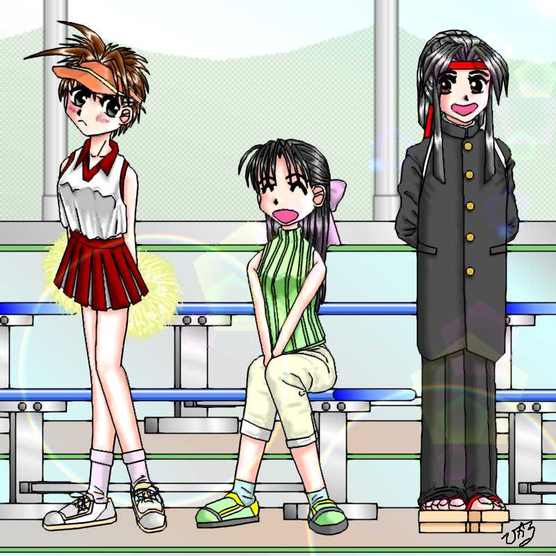

「天使のお仕事 第三話 イオちゃんの、恋のトキメキ？大作戦・後編」
注１：これまでのあらすじは第二話「イオちゃんの、恋のトキメキ？大作戦・前編」を参照のこと。
注２：作者は高校サッカー県予選の現実をまったく知りません。ですからおかしな処は笑って受け流してくださいな。
転校初日の夕方。伊織は再び屋上でパラレルと作戦会議をすることにした。
「で、なんでてめえがここにいるんだよ」
伊織は、手すりから地上を見下ろしている瑞樹に毒突いた。
「まあ気にすんな。協力してやるって言ったろ？」
「面白がってるだけのクセに」
「い〜え〜、味方は一人でも多い方がよろしいのですわ〜。これもわたくしの緻密な工作活動の賜物でしょうか〜」
「…………」
どういう理屈か鼻高々になっているパラレルを無視して瑞樹の視線を追うと、グラウンドではサッカー部が攻撃組と守備組に分かれたワンサイド形式の実戦練習をしている。
瑞樹は手すりに頬杖を付いてため息を吐いた。
「確かにまるでダメだな、ありゃ」
「なんだよ、ダメって」
「芹沢さ。指示はまともに出せてないし、判断は遅いし。ほれ、まただ」
ラインの連携を乱したディフェンダーの間をボールが抜け、そこにフォワードが走り込む。秀一はあわてて前に出るが、万全の体勢でボールをキープした相手と一対一ではどんなキーパーにだって利はない。難なくゴール左隅に決められてしまった。
「うちは守りのチームだってのに、指示がちぐはぐだから本来のプレーができないんだ。第一試合の四中商(四ッ橋中央商業高校)は県大会じゃ上位の常連校だし、このままじゃ試合にならないな」
「他人事みたいに言うな。そもそも瑞樹のせいでこんなハメになってんだろ」
「どこがあたしのせいだって？」
「芹沢のこと振っただろ」
瑞樹は伊織に向き直って腕組みし、あごを上げて揶揄するように見下ろす。
「へ〜、好きだって言われて断ったら、それは断ったヤツが悪いってか？」
伊織も負けじとにらみ返す。頬がぷっと膨れてしまうのはご愛敬だ。
「やり方が間違ってんだろっ！ 投げ飛ばしたりしないでごめんって断りゃ済んだんだバカ瑞樹っ！」
「誰も悪くないのにごめんなんて言えるかバカ伊織っ！」
「誰が悪いとかじゃないだろっ！ それが一番丸く収まるの分からないのかよっ！」
「バカ野郎っ！！ その場しのぎで頭下げるなんてできるかっ！！」
瑞樹が貯水タンクに拳を叩きつける音が辺りに響いた。
肩を怒らせて対峙する二人……は、すぐ横でパラレルがうっとりとこちらを見つめているのに気付いた。
「あぁ〜、青春ですわ〜♪」
のんきな声で言われると、どんどん気勢が削がれていく。あまり聞きたくない気もしたが、伊織は一応訊ねてみた。
「なにがだよ」
「もちろんお二人がですわぁ。これから二人は全身全霊を込めたこぶしで語り合うんですの。そしてお互い力つきたとき、男同士、真の友情が芽生えるのですわぁ〜。 『や、やるな』『お、おまえこそ』……って。ああぁ、なんてステキなんでしょぉ〜」
パラレルはセリフに身振り手振りまで交えて熱演した。
「いつの時代のドラマなんだそれ……」
「っていうか、どこが男同士だよ……」
「さあ〜、勝負ですわ〜」
パラレルは頭の上で手を交差させ、レフェリーの『ファイトっ』アクションをする。
お互いに顔を見合わせた伊織と瑞樹だが、この状況でマジメにケンカするのは至難のワザだ。どちらともなく深いため息をついて力を抜いた。
「おれの苦労がわかったか……」
「少しだけな……」
「もうおしまい？ おつかれさま二人とも」
上からの声にはっと見上げれば、いつの間に登ったのか貯水タンクから黒猫シリアルが一同を見下ろしていた。
「ネ、ネコがしゃべってる……」
「へ〜、さすが元パートナー候補だね。僕の言葉が分かるんだ？」
瑞樹の前に飛び降り、ひょいひょいとしっぽを振って挨拶する。
「ぼくはシリアル。よろしく瑞樹」
「ああ……、よろしく……」
「うん。で、なんの用だい、パラレル？」
「もちろん、これですわぁ」
パラレルは、にっこ〜と笑って『恋のトキメキ大作戦・後編』と書かれた台本を取り出した。
「さあ、役者もそろったことですし、イオちゃんの出番ですわ♪」
グラウンドでは、ちょうど練習が終わったらしくサッカー部員がグラウンド整備を始めていた。
このときシリアルの顔には蒼い縦線が何本も入っていたのだが、黒猫だけに気付く者は誰もいなかった。
——少年少女文庫１００万Ｈｉｔ記念作品——
原作 １００万Ｈｉｔ記念作品製作委員会
第三話担当 米津
第三話 「イオちゃんの、恋のトキメキ？ 大作戦・後編」
「ねぇ、こんなやりかたで本当に大丈夫なの？」
通学路に繋がる路地の出口で、塀にぴったりと背中を付けた伊織が小声で囁いた。
通学路では、シリアルが段ボール箱の中に座っていた。段ボールには、「拾ってください」なんて事が書かれていたりする。ネコが世の中に不条理を感じたときどんな顔をするか知る人は少ないが、今のシリアルを見れば一目瞭然である。
本来の姿で宙に浮いて通学路の様子を窺うパラレルは気合い十分だ。
「もっちろんですわ〜。古今東西、運命の出会いといえば捨て猫を拾うシーンで決まりですの。小さな命を大切にする彼の心に少女の気持ちは揺り動かされるのですわ。あぁ〜、な〜んてロマンチックなんでしょう〜」
「あたしが揺り動かされてもしょうがないような気がするんだけど……」
「い〜え、男の子がそういうシチュエーションに憧れてることが大切なのですわぁ〜」
どこか遠くを見つめて目をキラキラさせるパラレル。伊織はその向こうでニヤニヤしている瑞樹を睨み付けた。瑞樹はにやけ顔のままで、あたしゃ関係ないもんねと言わんばかりに肩を竦めた。
「なにか間違ってるような気がするよぉ……」
「さあイオちゃん、芹沢くんが来ました。準備ですわ」
「うん……」
夕暮れの中を、疲れた顔の秀一が歩いてきた。段ボールの横を通り過ぎようとしたとき、シリアルがにゃあと鳴いた。
「ん？」
視線を落とした足下に、段ボールから飛び出したシリアルが人懐っこそうにすり寄った。夕暮れの街角で、そこだけ時を止めたかのように一人と一匹の視線が交わる。オスカーものの名演技だ。
数瞬後……、
「…………うわぁぁぁっ！ ネコぉ〜〜っ！」
秀一は例の神速ステップで後ずさった。妙なところで律儀なシリアルはさらに追いすがる。
「わぁぁぁっ！ 来るな〜っ！」
秀一は電柱に飛びつき、体操選手のように見事な体捌きで瞬く間に３メートル以上の高さまで上ってしまった。シリアルは困った顔で、電柱の根本から秀一を見上げる。
「し、しっしっ……、頼むからあっちへ……っふ、ふぇっくしょんっ！ は〜っくしょんっ！ は〜っくしょんっ！」
盛大なくしゃみを始めた秀一を半口開けて見ていた伊織は、ため息混じりにヘアクリップを外してがっくりとうなだれた。
「オバＱか、あいつは……」
「あら、オバＱが苦手なのはワンちゃんですわ」
どうでもいいチェックを入れるパラレルの後ろで、瑞樹がぼりぼりと頭をかいた。
「ネコ毛アレルギーみたいだな、芹沢のヤツ……」
「はあ〜……」
伊織は改めて大きなため息をついた。そのとき、
「わぁ──っ」
シリアルの悲鳴が聞こえてきた。
「！？」
驚いた一同が目を向けると、シリアルが作業服姿の男に捕まえられ、保健所の車に乗せられているところだった。
「パラレル──っ！ 伊織──っ！」
叫ぶシリアルを乗せ、車が走り出す。
「わ〜っ、ちょっと待った〜その車〜っ！」
伊織は慌てて路地から飛び出した。スカートが風にひるがえるのもかまわず、女の子としては少々はしたない走りかたで車を追いかける。
「あ〜ん、待つのですわ〜」
「しょ、しょーもねー」
パラレルと瑞樹もその後を追いかける。電柱に登ったままの秀一は、珍妙な一行が走り抜けていくのをあっけにとられて見送っていた。

「ぜーっ、ぜーっ、ぜーっ」
５００メートル近く走って信号待ちの車に追いつきシリアルを助け出した一行は、完全に精根尽き果てへたりこんでいた。
「ひどいめにあったよ……」
シリアルは四つ足をだらんと後ろにのばして地面につぶれている。
「ま、まあ無事で何よりだったよな……」
「だな」
こちらもだらしなく脚を投げ出して座り込んだ伊織と瑞樹が頷き合う。
一方、変わらぬ笑顔のパラレルに息を乱した様子はまったくない。そもそも、ずっと宙を滑っていて走ってなどいないのだ。
「う〜ん、おかしいですわねぇ。計画は完璧でしたのに……」
「どこが完璧なんだよぉ〜」
「でも、めげている場合ではありませんわ〜。第３弾では図書館の書架で手が届かなくて困っているイオちゃんを……」
「もう勘弁してくれぇ〜」
パラレルが手にしたおさげのつけ毛と眼鏡を見て伊織は悲鳴をあげた。
「だめですかぁ？ ではとっておきの奥の手、芹沢くんのお部屋の天井を突き破ってイオちゃんが落ちてくるというのは」
「却下だぁっ！」
「あらぁ、人気があるパターンですのに。う〜ん、困りましたわねえ……」
ここまでこめかみを押さえて二人のやりとりを聞いていた瑞樹が口を挟んだ。
「よし、分かった。あたしにいい手がある」
「いい手？ なんだよ」
「わたくしのよりもいい方法などありえませんですわあ」
「こんなやり方まどろっこしすぎるんだよ。大船に乗ったつもりであたしにまかせとけって」
瑞樹はびしっとサムアップし、にいっと不敵な笑みを浮かべた。
そして、翌日の放課後。
「えと、早川伊織です。よろしくお願いします……」
伊織が自己紹介したとたん、サッカー部のクラブハウスが沸騰した。
《おおおおっ、神様あぁぁぁぁっ！ 毎日祈ってた甲斐がありましたぁぁぁっ！》
《じょ、じょ、女子マネぇぇぇぇっ！ 美人女子マネぇぇぇぇっ！ もう死んでもいぃぃぃぃっ！！！！》
《オレの、オレの、オレの青春に悔いなしぃぃぃぃぃっ！！！！！》
「あは、あは、あはは……」
ショート丈のスパッツにハイソックス、上はビッグサイズのＴシャツ姿という伊織は、あまりの反響にどうしていいか分からず曖昧な笑みを浮かべて立ちつくしていた。
たらったたらったと皆でラインダンスを始めたサッカー部員には、本来の伊織の友人も何人か混じっている。
──木下、佐山……、おまえらもう少しまともなヤツだと思ってたのに……。
伊織を連れてきた八重垣先生も顔をしかめていた。
「おい……、本当にいいのか早川？ 見てるこっちが不安になってくるぞ」
「は、はい……」
不安と言うより、中身が男の伊織としてはこうも歓迎されると部員をだましてるようで少々申しわけない。
「それにおまえら、早川が協力してくれるのは県大会が終わるまでだからな。わかってるのか？」
くぎを差そうとする言葉も、続いてアボリジニの闘いの踊りを始めた部員の耳には入りそうになかった。伊織は彼らが哀れでますます身を竦める。瑞樹の”いい手”とは、臨時のマネージャーとしてサッカー部に入り込むことだったのだ。
さて一方の秀一はというと、狂喜乱舞する部員たちから離れ、一人長椅子に腰掛けてスパイクを磨いていた。一瞬顔を上げて視線が合ったときに愛想笑いしてみたのだが、あからさまに視線を逸らされてしまった。
──うぅ、やっぱり変な女と思われてる。どうしてくれるんだパラレル〜！
後悔先に立たず。すっかり危険人物のレッテルを貼られているようだ。はぁ……っとため息をついた伊織を、部員たちが一斉に取り囲んだ。
《《さ〜早川さん、さっそく練習、練習》》
「ちょ、ちょっと待ってってば……。わぁぁ転ぶ！ あ〜ん、待ってよ〜っ！」
はしゃぎ回る男どもの壁に閉じこめられ、伊織は為すすべもなくグラウンドへ連れて行かれてしまった。
それから３０分後。
「お〜し、いっくよ〜」
《いいぞ〜！》
球出し係の伊織は女の子にしてはサマになったフォームでボールを蹴り出した。ミッドフィールダーの部員はそれを前に立つポストにダイレクトでパス、そしてボールを追うようにダッシュする。
ポストが小さく返したボールに足が届く瞬間、伊織の声が飛ぶ。
「右っ！」
思い切りよくインステップキック。しかし、低い弾道で右隅を狙ったボールはゴールを掠めて飛び去っていった。すかさず伊織の黄色い声が響く。
「はいだめ〜。へたっぴぃ〜♪」
部員は地面を叩いて悔しがり、周囲は声を上げて囃し立てている。
というわけで、気が付けばすっかり乗せられてしまってる伊織だった。
部員たちはノリがいいし、なにより自分の笑顔一つで目に見えて動きがよくなるのだ。この感覚が新鮮でとても可笑しい。ヘアクリップの力も借りて、ちょっぴりお姫様気分である。
だが、ふと我に返ってみればそのメンバーの中に秀一の姿はない。見回してみれば、グラウンドの脇で一年生部員を相手にしてローボールキャッチの練習をしていた。
──げ、しまった。乗せられてる場合じゃない……。
とはいえ、球出しを途中で放り出すわけにもいかないし、理由もなく秀一のところへ行ったら不自然だ。
そこへ都合良く、強いボールが返ってきた。伊織はわざとボールを止めそこない、コースを変えて秀一の方に転がした。
「あっ、ごめ〜んっ！」
蹴り返される前にボールを追って秀一のところに走り寄る。
「ね、芹沢くんはゴールに入らないの？」
「まだウォームアップ中だからね」
伊織のボールを脚でぽんと弾き上げてキャッチした秀一は、ボールを見たまま伊織と目を合わせずに答えた。
「なら、あたしこの子と代わってあげようか？ キミも練習したいでしょ？」
言われて一年坊が秀一を見る。だが、秀一は首を横に振った。
「俺はいいから、あいつらの相手してやってよ」
指差した先を見れば、がん首並べた部員たちが忠犬ハチ公のように伊織が戻るのを待っていた。
《早川さ〜ん、ぼーる──っ！》
──あうう……。
期待のまなざしを一身に受けてしまった伊織は球出しに戻らざるを得なかった。
《じゃあ、あとよろしく早川さん》
「また明日ね〜」
最後にクラブハウスを出る部員を見送った伊織は、ヘアクリップを外して部屋の中を振り返った。
机の上には、泥だらけになった練習用ユニフォームがうずたかく積み上げられている。調子に乗りすぎたのか、ヘアクリップの威力なのか、つい軽々しく洗濯を引き受けてしまったのだ。
「ひえぇぇん、なんでこんな臭うんだよぉ。あいつらちゃんと風呂入ってんのかぁ？」
ユニフォームを紙袋に詰めていると、男の汗の臭いが強烈に鼻につく。自分の身体が女の子の匂いに変わったからなのだが、本人がそこまで気付くものではない。
二つにわけた紙袋を持ち上げてみると、かさばるし、なにより女の子の身にはけっこう重たい。
──うう、引き受けるんじゃなかったかも……。
そのとき、伊織の後ろでクラブハウスの戸が開いた。
「よう伊織、お疲れさん」
「わあぁっ！ って、なんだ、瑞樹かよ……」
伊織は髪に付けようとしたヘアクリップをポケットにしまい、落としてしまった紙袋を拾い上げる。
「今日はえらく楽しそうだったじゃないかよ。才能あるんじゃないか？ マネージャーの」
図星を指されて伊織の顔が赤くなる。
「見てたんかよ、ヒマ人だな……」
「ば〜か、グランドの隣で援団のトレーニングやってたんだよ」
そういえば、練習中に発声練習の声が聞こえていた。
「ならわかってんだろ。失敗だぜこの作戦……」
ただでさえ秀一に警戒されているのに、他の部員から引っ張りだこで部活の間に言葉を交わす暇などほとんど見つからなかったのだ。
「焦るなよ。部員連中とはうまくいってんだ、初日にしちゃ悪くないさ」
瑞樹は紙袋の一つを覗き込み、軽々と持ち上げて笑った。
「大変だなマネージャーも。どうせ洗濯のしかた知らないんだろ？ 手伝ってやるから感謝しろ」
翌日の朝練。
《ちゃ、ちゃんと真っ白になってるぞぉぉぉっ！》
《うぉぉぉっ、これが早川さんの香りぃぃぃぃっ！》
《今日はオレこれ着て寝るぞぉぉぉっ！！》《バカやろぉ、オレの早川さんを汚すなぁ》
「あははは……」
伊織は、真っ白に洗い上がってかすかなラベンダーの薫りがするユニフォームを配りながら、そのあまりの反響にまたまた身を縮めていた。
《いいよな〜早川さんって元気で女の子らしくて》《だよな〜》
「そ、そんなことないよ……」
女の子らしいどころか中身は男の伊織にこんな気配りができるはずがない。漬け置きの漂白から乾燥機の香り付けまで、瑞樹の知識や手際のよさに頼りっぱなしだったのである。
──あの瑞樹がなあ……
男子生徒の間での瑞樹の評価は『あいつは女じゃない』で一致している。本当は誰が洗濯したのか知ったらこの部員達はどんな顔をするのだろうと思わずにはいられなかった。
「はい、芹沢くん」
「ああ、サンキュー」
秀一にキーパー用ユニフォームを手渡す。秀一と話をする数少ないチャンスなのだが、秀一は目を合わせずにそぞろな礼を言っただけだった。だが、伊織は秀一がユニフォームを見つめて怪訝な顔をしているのに気が付いた。
「どうしたの？」
「いや……、なんでもない」
「？」
《さ──ぁ、早川さん、今日も練習だ──っ！》
「えっ、ちょっとっ！ あ〜んっ、今日もこうなの──っ？」
芹沢の様子が気になった伊織だが、例によってそれを訊ねる間もなく部員に囲まれ、グラウンドに連行されてしまった。
「…………」
秀一は手元のユニフォームを伊織が出ていった扉とを交互に見比べた。
「これって……」
「ねえ、伊織ちゃん大丈夫？」
「うん、大丈夫……」
夕ご飯の席で真織に尋ねられ、えいと腕を曲げてガッツポーズする伊織だが、その動作は油が切れたロボットのようにぎこちなかった。
「毎日毎日大変よね〜」
真織の表情はあきれるのが１／３、感心が２／３くらい。一応、好意的には見てくれているようだ。
真須美さんは転んですりむいた鼻の頭の絆創膏を見て苦笑する。
「でもね、おてんばさんもほどほどにしないとね」
「いや、女の子でも体を鍛えるのはいいことだよ、真織も見習うといい。なあ伊織君」
「はい、ははは……はぁ……」
笑い声からも途中で力が抜ける。
サッカー部のマネージャーになって一週間。
中身が中身だけに見た目よりずっと運動神経の良い伊織は、マネージャーと言うよりサッカー仲間として部員に認められつつあった。単なる球出しだけでなく基礎練習のいくつかにも加わっている。
それはいいのだが、なにしろ相手は体育会系、おまけに試合も近いとあって紅一点＆初心者の伊織にも手加減ができないのだ。伊織も男の意地とばかりそれに応えるのだが、なにぶん身体は華奢な女の子、無理はやめてと悲鳴を上げる……要するに、強烈な筋肉痛になるのである。
なお悪いことに、この一週間で秀一との間には何の進展もなかった。進展どころか、いまだ何のきっかけも掴んでいないのだ。週末の試合まで、時間はたったの２日しか残されていなかった。
身体中が筋肉痛、箸を持つ腕も筋肉痛、というわけで、食事を終えるのも伊織が一番最後である。食事が終わる頃にはダイニングは伊織一人になっていた。そこへ、居間から戻ってきた真織が囁く。
「ねえ伊織ちゃん、筋肉痛ひどいんならマッサージしよっか？」
「マッサージ？」
「うん。こーやって……」
真織は後ろから両手で伊織の肩を掴み、親指にぐいっと力を入れて肩胛骨の間を押す。
「ひゃあっ！」
「どう？ 気持ちいいでしょ？」
「う……うん……」
ツボを押される快感に、敏感な肌をなでられるくすぐったい気持ちよさもちょっぴり加わって、信じられないくらい心地がよい。だが、瑞樹にイタズラされたときの感じを連想して、ちょっぴり顔が赤くなってしまう。
「じゃあ、ご飯が終わったら社務所に来てよ。あたしもやってもらいたいし」
「え、ええっっ！？」
「待ってるからね」
真織は伊織の耳元で囁き、足取りも軽く走り出ていった。
──は、は、は、早川さんにマ、マ、マ、マッサージ……
──やだぁ伊織ちゃん、くすぐったいよぉ……
──あ〜ん、そっちはだめ。そんな事するなら、こっちもお返しっ
──やん、きゃ〜♪
猫のようにじゃれ合う自分と真織の姿を思い浮かべ、思わずぽろりと箸を落としてしまう。慌てて拾い上げようとすると、床で食事中のシリアルと目があった。
「伊織、顔ニヤケてるよ」
「え？ き、気のせいでしょ……」
「ふ〜ん……」
ジト目のシリアル。なにせ伊織は言い訳するその顔からしてニヤついているのだ。
「だ、だ、だってしょうがないでしょ。さそわれちゃったんだから……」
両手を腰に当ててつんっとむくれてみせる。だが、お膳を片付けてダイニングから出ていく足取りは、もうスキップでも始めてしまいそうなくらい軽かった。しょうがないなんてことはちっともなさそうである。
シリアルはすまし顔でつぶやいた。
「もし本当にそうなったら伊織、気絶しちゃうと思うけどね……」
「真織ちゃ〜ん、いる〜？」
ちょっぴりの罪悪感をとびっきりのエッセンスにした期待で胸膨らませながら、そ〜っと社務所の扉を開ける。動きやすいようにと（どんな風に？）考え、サッカーの時と同じＴシャツにスパッツ姿である。
「おっそ〜い。ずっと待ってたんだよ」
「あははは、ごめんね……」
真織は口をとがらせているが、責める口調でさえなんだか甘く聞こえて気持ちがいい。
「はっはっは、伊織君は疲れてるんだからしかたなかろう」
妙に弾んだ守衛の口調もなんだか甘く聞こえて気持ち……、と、ここで伊織は桃色思考から我に返った。
「お、おじさん？」
「父さんの合気道マッサージってすっごくよく効くのよ。美容にいいって雑誌にも載ったくらいなんだから」
伊織の心を知ってか知らずか(もちろん知るわけがないのだが……)、笑顔の真織は当たり前のことのように言った。
「まあそれほどでもないが、がんばってる伊織君のために一肌脱いであげようと思ってね……」
作務衣にタスキを掛けて気合い入りまくり、嬉々満面の守衛がぽきりぽきりと指を鳴らす。
「さあ、早川神影流合気術に伝わる整体術と点穴の極意を見せてあげよう」
「父さんってね、合気道の師範なのよ♪」
「え、え、え……？ 合気道……？ 師範……？」
むんずと両肩を掴まれた瞬間、衝撃にも似た痛みが総身を走り抜ける。
「あ゛〜〜〜〜〜〜〜っ！」
「ふうむ、やはりだいぶ凝っているようだね……」
痛みで床に崩れ落ちそうになった伊織の身体を、守衛がひょいと裁く。
「えっ！？」
なにがどうなったのか理解するまもなく、伊織は床にうつぶせに寝転がされていた。慌てて起きあがろうとしたが、その前に守衛が馬乗りにのしかかって右腕を絡め取る。
「いざっ！」
腕と肩の筋が引き伸ばされる痛みで、頭の中が真っ白に染まる。
「い゛だ〜〜〜〜〜〜〜っ！」
母屋のキッチンでその悲鳴を聞いたシリアルは、哲学者のように目を閉じて肩をすくめた。
「ま、こーなるような気はしてたけどね」
「う゛あ゛〜〜〜〜〜〜〜っ！」
それから３０分の間、早川神社には伊織の甲高い悲鳴が響き渡り続けたという……。
守衛に合気マッサージしてもらった──気分としてはも骨までみくちゃにされた──伊織は、お風呂を済ませて気絶防止のヘアクリップを取り忘れたまま自分の部屋に戻っていた。
「ひどい目にあった、っていうわけじゃないのかなぁ……」
ベッドの上で二度三度と前屈をしてみると、さっきまでの筋肉痛はきれいさっぱりなくなっていた。慣れないブラで凝りっぱなしだった肩も今は嘘のように軽い。それに、身体がほぐれたためか、なんの抵抗もなく頭が膝に届いてしまう。
「へえ〜、伊織って身体柔らかいね」
シリアルが感心して言う。
「そうみたい。あたしも初めて気がついたけど」
関節が柔らかくなっただけでなく、肌の手触りも一段となめらかになっている。パジャマの袖をまくって二の腕で頬をなでると、天にも昇りそうな感触に思わず目を細めてしまう。
「気持ちいいのかい？」
「すっごいスベスベ。真織ちゃんも美容にいいって言ってたもんね。でも、あんまりかわいくなってもなぁ……」
机の鏡を手にとって覗けば、湯上がりでかすかに上気した女の子の顔が映る。とても可愛いのだが、それが自分だと思うと恥ずかしい。もっと可愛くなれると言われても単純に喜べるものではない。
「まあ、かわいくなれば今回の仕事には役立つんじゃないかな」
「仕事かぁ……」
鏡をぽーんとベッドの上に投げ捨て、その横にこてっと寝転がる。ベッドに飛び乗ってきたシリアルが伊織の顔を覗き込む。
「気乗りしないみたいだね」
「だって、もう時間がないよ……。それに、芹沢くんあたしの事なんかぜんぜん無視なんだもん……」
伊織はシリアルの脇に両手を差し入れて顔の前に持ち上げる。
「どうしたらいいか判らなくなっちゃった。男の子の事なんてぜんぶ分かってると思ってたのにね」
ぶら下げられて背中を丸めたシリアルは、ひげをぴくつかせてから首を傾げる。
「そうかな？ 芹沢くん以外のサッカー部員とはうまくやってると思うよ？」
「うん、みんな一緒にわいわいしてるときは楽しいの。でも、一対一になっちゃうとダメ」
こちらから見れば相手は同性、なにを考えてるかすぐ分かるし気楽につきあえる。そう思っていた伊織だが、相手から女の子として意識されていると、ついつい自分の身体のことを意識して自然な態度ではいられなくなってしまうのだ。だが、女の子はどうすれば男の子と気兼ねなく話せるのか、今まで女の子と付き合った経験がない伊織には分からなかった。だからこそ、それを忘れられるサッカー練習に熱を入れてしまったのだ。
「あまり思い詰めないほうがいいよ。一度くらいうまくいかなくたって、まだまだ次はいっぱいあるんだからさ」
「うん……」
コンコン……と、ドアがノックされた。
「伊織ちゃん、入るよ？」
鍵を閉めていないドアが細く開き、そこから斜めになった真織の顔がひょこっと覗く。
「ま、ま、ま、真織ちゃん……」
「くすっ、伊織ちゃんその子とお話ししてたの？」
「あ、ううん、違うのっ！」
「ふぎゃっ！」
猫に話しかける事がどんなに乙女チックに見えるかに気付いた伊織は慌てて飛び起き体裁を繕う。思わず両手でシリアルを抱きしめてしまい、シリアルは目を白黒させて悲鳴を上げた。
「照れなくてもいいのに。そういうのかわいいと思うよ」
そのフォローがかえって羞恥心を倍増させ、伊織の頬は真っ赤に染まった。真織はくすくす笑いながらベッドに登り、女の子座りしていた伊織の隣に横座りした。伊織のすぐ後にお風呂に入ったらしく、いつものピンクのパジャマ姿である。
「痛いの、よくなった？」
「う、うん……」
肩が触れ合いそうな距離にいるせいで、まだ乾ききっていない真織の髪からシャンプーの香りが漂ってくる。夜の灯りの下で見るパジャマ姿は、可愛いだけではない艶っぽいムードを漂わせている。思わず目を逸らせば、ベッドに投げ捨てた鏡には自分の、真織とよく似たパジャマを着た女の子の姿が写る。まるで女の子の秘密の時間に迷い込んでしまったような気がして、伊織はますますその身を縮こまらせた。
「でしょ。すっごいよく効くのよ。久しぶりだから父さんも張り切ってたし」
「いつもはしないの？」
「しないよ〜。恥ずかしいでしょ十七にもなって。今日は伊織ちゃんが大変そうだったから」
「そうなんだ……」
伊織は奇妙なほど張り切っていた守衛と、きゃいきゃい文句を垂れながら楽しそうに整体を受けていた真織を思い返した。あれは父娘にとっても特別な時間だったらしい。
「それより、本題。伊織ちゃん、なんでそんなに頑張ってるのかな？」
二人の肩がこつんとぶつかる。真織が身体を寄せてきたのだ。間近からのイタズラっぽい瞳が伊織を捉える。
「な、なんでって……？」
触れ合った肩の柔らかさに言葉が震える。真織はぷっと吹き出した。
「ふふ、焦ってる。伊織ちゃん、隠し事下手だよね。いるんでしょ、サッカー部に好きな人？」
「すすす好きな人ぉっ!?」
予想外の展開にびっくりした伊織はベッドの端まで飛び退く。真織は目に妖しい光をたたえ、四つんばいで豹のように詰め寄ってくる。
「さあ、おねーさまに白状したんさい♪」
パジャマが垂れ下がって大きく開いた胸元から、ノーブラの白い谷間が覗く。ちなみに、伊織のよりちょっと深そうだ。
「ひえぇぇ」
ヘアクリップが吸収しきれない刺激をすべて恥ずかしさに変換する。伊織は真っ赤になって縮こまり、両手で顔を覆った。
「隠してもムダ。芹沢くんでしょ？ 全部聞いちゃったの、ネコちゃんと話してるの」
「ち、違うのっ……」
伊織は慌てて否定しようとした。だが、顔を覆っていた手をどけた瞬間、次の言葉が続かなくなった。
「隠さないで。立ち聞きしたのは悪かったけど、あたしも伊織ちゃんのこと応援したいの。お願い」
鼻と鼻が擦れあいそうな距離から、真織は真剣な眼差しで伊織のことを見つめていた。いつもの明るい真織ではない、どこか悲しげで、幼い少女のように不安げな表情で。
「あたしも分かるの、男の人が分からないって気持ち。でも、あきらめないで、絶対に……」
伊織は自分の胸の奥からきゅうっという音が聞こえたような気がした。そして、不思議なほど暖かくて優しい気持ちがあふれ出してくる。
「ありがとう真織ちゃん。大丈夫、あたしまだがんばれる」
「絶対だよ。じゃないときっと後悔するから……」
「心配しないで。負けないから」
根拠のある言葉ではないが、世界で一番大切な女の子にこんな顔をさせておきたくなかった。笑顔を作り、精一杯の勇気で真織の頭にぽんと手を置く。
「だから、真織ちゃんも笑って♪」
真織の表情がぱあっと輝く。
「あはっ、大好き伊織ちゃん！」
「きゃっ！」
真織が飛びついてくる。思いっきり抱きしめられた伊織はその勢いで後ろにひっくり返ってしまった。その拍子にヘアクリップが吹き飛び、女の子の感覚が散り散りになって消えていく。
「はははは早川さぁぁぁんっ！！」
ノーブラの胸の膨らみがパジャマを隔てて互いに押しつけあい、右に左に擦れあう。真織の胸の弾むような柔らかさと、自分の胸がパジャマに擦れて生まれる痺れにも似た気持ちよさが、同時に背筋を駆け上がって伊織の頭の中を直撃する。
「あたしすごく元気が出ちゃうの、伊織ちゃんが頑張ってるのを見ると」
満面の笑みを浮かべた真織が頬をすり寄せる。さらさらとした肌触りと甘い香りに、伊織はあうあうと意味不明の声を漏らすばかりだ。
「それに、今まで男の子のこと相談しあう友達っていなかったの。だから、これからはこうやって何でもお話ししようね」
真織はキスするように両手を伊織の顔に添え、おでことおでこをこつんとぶつけた。そして伊織から身体を離し、跳ねるような足取りで部屋から出ていく。扉を閉めながら、大きく開いた手を何度も小刻みに振った。
「じゃあ、おやすみっ♪」
シリアルは真織の足音が遠ざかるのを確認して伊織のベッドに飛び乗った。
「大丈夫かい、伊織？」
伊織は足をぴくぴく痙攣させながら、桃色に緩みきった笑顔でベッドに転がっていた。ぽやっと開いた瞳にはどこかの天国が映っているらしい。
「シ、シアワセ……。もう死んでもいい……」
「いいのかな……？ 真織さん誤解しちゃったみたいだよ？」
「はにゃ〜〜〜ん」
幸せの鐘が鳴りっぱなしの伊織の耳に、シリアルの声は届きそうになかった。
「やれやれ……」
そして次の日、土曜日の朝。
伊織の朝は波乱に富んでいる。まず、朝一番の難関イベントは着替え。そのあとは、一家で朝食。そして、真織と一緒に楽しい通学。
だが、さらにもう一つ、毎朝欠かさない……、いや、欠かしてもらえない事がある。
「伊っ織ちゃぁぁぁん、おっはよ〜〜〜〜〜〜〜〜〜〜〜〜っ！」
廊下の端から端まで響きわたる軽薄な声。伊織は振り向きざまに手刀を振り上げる。
「んごわっ！」
ぱこ〜んと眉間に命中した手刀が、後ろから抱きつこうとしていた藤本を後ろにのけぞらせた。
「も〜う毎日毎日っ！ 少しは懲りてよっ！」
仁王立ちの伊織は上半身を突き出して藤本をどやしつけた。すっと姿勢を正した藤本は顎に手をやりキザな笑みを浮かべる。
「ふふっ、見事な一撃だったよハニー」
「誰がハニーよっ！ あたしは藤本くんなんかキライなのっ！」
「あぁぁ、その冷たい言葉がますます僕の心を熱くさせるのさ」
これが朝の恒例、藤本のラブアタックである。ちなみに、伊織だけでなくそこらじゅうの女の子にやっているのは全校でも周知の事実だ。
よくまあ女の子に嫌われないものだなと伊織は思っていた、のだが……。
「ふ〜ん、じゃあ一人で熱くなってれば？」
「うう、つれないなあ……」
藤本はテンポ良くかっくんと首をうなだれる。
こうして女の子として相手をしてみると、ぽんぽんとした言葉のキャッチボールは意外に楽しい。実際、女の子の中に入ってみると藤本の評判は決して悪くないようだ。
「……よ〜っし、次は真織ちゃんの番だな」
「ええっ……？」
一瞬で回復した藤本が喜色満面で身構える。真織はひきつった愛想笑いを浮かべて後ずさる。
「だぁぁぁっ、真織ちゃんはダメっ！ 誰彼構わず口説かないでっ！」」
真織に手を出されてはたまらない伊織は大慌てで二人の間に割って入る。もっとも、伊織は藤本がこれ以上は真織にちょっかいを出さないだろう事も知っていた。相手を見て、本気でいやがる事は絶対にしない。これが藤本が女の子に嫌われない一番の理由だった。
「ふっふっふ、ヤキモチ焼いてるのかい。僕も罪な男だね」
「焼いてないっ！」
後ろで真織がくすくす笑う。真織もこのやりとりを楽しんでいるのだ。それに気付いたとき、ふと心の中に引っかかりが生まれた。
──なんで、こいつ女の子とこんなに普通に話ができるんだ……？
進藤伊織は早川真織と自然に話をすることができなかった。女の子の事が分からなかった。
早川伊織は芹沢秀一と話す糸口も掴めない。当たり前のように分かっていたはずの男の事が分からない。
早川真織は、男の気持ちが分からない伊織を理解できると言った。
「伊織ちゃんの乙女心、確かに受け取ったよ」
「だ〜か〜ら〜、ヤキモチなんか焼いてないって言ってるでしょ！」
藤本幸也はごく当たり前のように伊織と接し、伊織もまた藤本とは当たり前のように接することができる。
「うん、僕もその気持ちに応えないとね。じゃあ決まり。明日は僕とデートしよう」
「ど〜してそうなるのよっ！ あたし明日はサッカー部の応援なのっ！！」
進藤伊織が一年かけたって言えたかどうか分からない言葉を、藤本は何の気兼ねもなく口にした。
藤本は、伊織にはできないことを当然のことのようにしてしまう。
何か面白くなかった。
「応援！？ それってチアガール！？」
「なわけないでしょっ！」
「え〜！？ そんなのもったいない。こ〜んなに脚きれいなのに〜」
藤本はしゃがみ込んで、伊織の脚にすり寄るような仕種をする。そして、伊織の顔を見て眉をひそめた。
「見るなスケベぇっ！」
いつもの突っ込みのつもりだった。だが、そこには藤本へのやっかみが入っていたかもしれない。蹴り上げた脚は、伊織自身も想像しないスピードで弧を描く。
伊織の顔に気を取られていた藤本も反応が遅れた。
どすっ。
 勢いの乗ったインステップキックが藤本の股間を直撃。藤本は悶絶して後ろに吹っ飛んだ。
勢いの乗ったインステップキックが藤本の股間を直撃。藤本は悶絶して後ろに吹っ飛んだ。
「うぅぅぅぁぁぁぁぁ……い、伊織ちゃん……ひどい……」
立ちつくした伊織の腰の辺りから真織が顔を覗かせ、頬を赤くして伊織の顔を見上げた。
「伊織ちゃん……。いくらなんでも、ちょっとかわいそうだよ……」
伊織も我に返って藤本に駆け寄る。
「わぁぁぁっ！ ご、ごめん藤本くんっ！！ つい勢いでっ！」
今の身体でこそ経験しようもないが、伊織だってこの痛みはよく知っている。
「あ……伊織ちゃん。僕が死んだら、これを僕だと思って大切に……」
伊織の腕の中で、顔面蒼白の藤本が上履きを脱いで手渡す。
「ああああ、こんな時に冗談はいいからぁ、ごめんなさいぃぃぃっ」
「あと……、一つだけお願いが……」
「な、なに！？ なんでも聞くから！」
「明日の応援……、チアガールの格好で……」
「えええぇぇぇぇっ！？」
悲鳴を上げた伊織だが、その間にも藤本の顔からはどんどん血の気がひいていく。
「ああ、川の向こうにきれいな花園が見える……。頼むよ伊織ちゃん……」
「あぁぁぁぁ、分かった、分かったから、チアガールでもなんでもするからしっかりしてぇっ！」
伊織の言葉を聞き、藤本は周りを見回して弱々しく微笑みながら親指を立てた。
騒ぎを聞きつけて集まってきた生徒達、特に男子生徒が、それに応えて涙を流しながら大きく頷いた。
その瞬間、藤本は力つきてがっっくりと首を垂れた。
「ごめんなさいっ！」
騒動から３０分後。伊織は１００度の角度で頭を下げた。
「ははは、いいよ。もう大丈夫だから……」
ベッドの藤本は血色も戻って快活な笑みを浮かべていた。男子生徒の杵つき運動の賜物だろう。
ちなみに現在、彼らは保健室で二人っきりだ。
「でも、どうしたんだい？ あのときはいつもの伊織ちゃんじゃなかったみたいだけど？」
いつになく落ち着いた口調に伊織ははっと顔を上げたが、藤本の表情はいつもと変わらない。
「ちがってた……？ いつもと」
「うん。なんていうのかな。あの時だけ瞳が笑ってなかった」
よく見ているんだなと伊織は思う。だからこそ、女の子に嫌われるようなことをせずにいられるのだろう。
「嫉妬……、してたのかな。藤本くんに」
「真織ちゃんに浮気したから？」
「違うっ！ そうじゃなくて、なんでそんなに当たり前に女の子と話せるんだろうって」
藤本はへっ？と首を傾げた。
「そんなに他の人と違うかな？ 考えたこともなかったけど」
「だって、あたしはそんな風にできないもん」
「う〜ん、まあ、大好きだからね、女の子」
「スケベ」
「それは間違いないね」
藤本は頭に手を当ててあはははは〜と笑った。
「でも、それでいいんじゃないかな。好意を持ったら、気取ったり格好付けたりせずにその事を態度で示す。それだけだと思うよ」
「それができたら苦労しないんだけどなぁ……」
言葉ではそう言ったが、なんとなく気持ちが軽くなったような気がして伊織も笑った。
「とっころで〜、もう一つ大事なことがあったよね〜」
急に藤本の口調が軽くなり、伊織の笑顔が引きつった。
「な、なんだっけ……？」
「ち・あ・が・あ・る。もう明日が楽しみで楽しみで」
「や、やっぱりやらないとダメ……？」
「あ……、また急に痛みが……」
藤本はわざとらしい仕草でベッドにつっぷしった。
「ああああ、もうっ。分かった。やるっ！ やりますっ！ やらせてくださいっ！」
「ははは、そうこなくっちゃ」
身を起こした藤本は心底嬉しそうだった。だから伊織も憎めない。得な性格である。
「もう……どうしてそうなのよ……」
「そりゃもちろん、伊織ちゃんのこと大好きだからだよ」
「ふえぇぇぇん……」
「あ〜あ」
試合を明日に控えた土曜の放課後練習は、簡単な基礎練習のみ。しかも部員達はミーティングもせずにさっさと帰宅してしまい、クラブハウスはまだ昼間だというのに空っぽになっていた。
明日に向けて気合いが入るとばかり思っていた伊織は低い天井を見上げてため息をついた。
「結局、連中も諦めちまったのかな……」
ある意味、それはやむを得ないことなのかもしれない。秀一は今もって不調の極みなのだ。部員達は帰り際に笑顔で口々に言っていた。
《ははは、これじゃ明日は試合にならないな……》
初心者でサッカーの巧拙はよくは分からない。だが、天使の仕事のためとはいえ一週間練習を共にして頑張ってきたつもりの伊織としては面白くなかった。
クラブハウスの扉が開く。
「よ〜う、伊織〜。持ってきたぞ、チアガールの衣装」
楽しくて仕方がなさそうな顔で、紙袋を掲げた瑞樹が入ってくる。明日の衣装を応援団のチアリーディングパートから借りてきたのだ。
「ああ、サンキュ……」
気抜けした返事に拍子抜けた瑞樹は伊織の顔を覗き込む。
「なんだよおい？ もうちょっとイヤがるとか照れるとか伊織らしいカワイイ反応があるだろ？」
「どういう反応だよ。そんな気分じゃないんだよ……」
「はあ？」
誰かに愚痴らないと気が済まなかった。伊織は瑞樹相手に不満をぶちまけた。
「なるほどね」
瑞樹はこともなげにそう言った。
「なるほどじゃないだろ」
伊織が頬を膨らせて睨みつけると、その視線を両手でいなして奥の壁を指差す。
「まあまあ。そこの壁、見て見ろよ」
瑞樹が指差した先には、大きく『目指せ全国制覇』と張り紙がしてあった。
設立２年目の、経験者すら満足にいないサッカー部だ。高望みを通り越して冗談としか思えない内容である。それを証明するかのように、張り紙の回りの壁には部員が書いたらしい無数の落書きがある。
《ムチャだ芹沢〜っ！》《バカ言うな〜っ》《ジョーダンはよせ》
「これな、芹沢のヤツ大まじめで書いたんだぜ」
「芹沢が……？」
言われてもう一度壁を見る。力を込めて書かれた豪快な文字は、普段の穏和な秀一からはうまく想像できない。
「初めての公式戦で、やつら１２対０で負けたんだ。まあ、相手は県大会の決勝まで行ったんだ、仕方なかったろうな」
瑞樹は正面に立って張り紙を見つめる。
「それでみんな落ち込んで帰ってきて、もうサッカーなんかやめようかってな感じで話をしてたらしいんだ。そうしたら芹沢のヤツ、諦めるなってみんなの前でこれを書いたんだとさ。目標は高く持とう、次は本気で全国制覇を目指そうって言って。キーパーのあいつが一番ショックだったはずなのにさ」
「だけど、誰も本気にしてないんじゃないのか……？」
伊織は親指で落書きだらけの壁を指す。瑞樹は肩をすくめて苦笑した。
「違うさ。よく見ろよ。紙に直接落書きしてるヤツは誰もいないだろ」
瑞樹の言うとおりだった。この汚いクラブハウスの中で、張り紙のケント紙にだけは一点の汚れもない。
「口でどんなにいい加減なこと言ってたって、あいつら内心じゃずっとそれを目標にしてるのさ。でなきゃ２年であんなに上達するもんか。可能性があるかぐらい分かってるだろうに、まったく脳天気って言うか無邪気って言うか……」
瑞樹は『目指せ全国制覇』の文字を指でなぞって苦笑する。その瞳には強い憧憬の色があった。
「だから、あいつらが……芹沢がこのまま終わるはずがないさ」
「瑞樹……、おまえ、本当は芹沢のことが好きなんじゃないのか……？」
瑞樹の口調、そして表情を見ていると伊織にはそう思えてならなかった。しかしその問いに、瑞樹はふふっと笑って肩をすくめた。
「冗談はよせよ。確かに芹沢はすごいさ。あたしもあいつのことは尊敬してる。けど、好きってのは尊敬やあこがれとはちがうだろ？」
「なんでそんな区別するんだよ。あこがれだって尊敬だって相手を好きって事だろ」
瑞樹は口元をゆがめ、遠い視線を天井に向ける。自分に言い聞かせるようなつぶやきが漏れる。
「あるのさ……。あこがれだけじゃ好きだって言えないことが……」
だが、伊織の視線に気付いてびくっと我に返った。
「バ、バカ野郎、なに言わせるんだ！ これ以上訊いたらまた胸揉みだぞ！」
「ひえっ！」
理不尽この上ない言いぐさだが、瑞樹がぱっと手を上げた途端に伊織は両手で胸をかばって２ｍ近く飛び退いた。それだけこの間の胸揉みは鮮烈な体験だったのだ。
だが、瑞樹はそんな伊織をからかうでもなく言葉を続けた。
「と、とにかくあたしが芹沢を好きなんて事はないっ！ それと、もし芹沢に会いたいなら今からあたしらの通学路の途中にある公園に行って見ろっ。じゃあなっ！！」
言いながら外に出て、ばたんと扉を閉める。伊織はチアリーダーの衣装が入った紙袋と一緒に取り残された。
「なんなんだあいつ。言いたいことだけ言って行っちまいやがって……」
ぶつぶつ言いながら、ごそごそと紙袋の中身を確かめる。
「ひええぇぇぇ、なんだこのパンツっ！」
一番最初に手に触れた布きれを引っ張り出すと、それはひらひらのフリルがいっぱいついたアンダースコートだった。
あとは、緋色と白のツートンになったＶネックのタンクトップとスカート。サンバイザーと黄色いフラワーポンポンも入っている。
思わず自分がそれを着ている姿を想像した。かわいいのだが、きっとすごくかわいいのだが……
「うぇぇぇん、なんでおれがぁ……」
言うまでもなく、かわいければかわいいほど恥ずかしいのが伊織なのである。
伊織は帰宅の途中で寄り道をして学校から３００ｍほどの距離にある公園にやってきていた。伊織は知らない事だが、秀一が瑞樹に告白したのはこの公園である。
初夏の４時半はまだ夕方にはほど遠く、芝生のあちらこちらでカップルが座っていたり、子供がキャッチボールをしていたりする。
「ふ〜ん、なんか懐かしいな」
本来の伊織の家からほど近い公園は小学校の頃まで格好の遊び場だった。低学年まで遡れば、よく瑞樹と一緒に遊びに来ていた覚えがある。
「よく泣かされたよな……」
今も昔も変わらない関係に苦笑する。あの頃と違うのは、もうこの公園にも来なくなって久しい事。そして、今の伊織はセーラー服を着た女の子だという事くらいか。
そんな感慨と不条理に頭を巡らせながら、のんびりと辺りを散策する。身体が小さく華奢になった分だけ世界と心が近づいたのだろうか、新緑のざわめきも、そよぐ風の薫りも、見上げる木漏れ日も、周りのすべてが新鮮で嬉しい事に感じられる。
公園を散策する女の子という他人の目に映る光景を思い浮かべても、自然の開放感がそうさせるのか、恥ずかしいと言うよりはむしろくすぐったくて楽しい気分だ。
「へへ、悪くないなこういうの」
芹沢こそ見つからなかったものの、この身体で楽しい事が一つ見つかったのは間違いない。いい気分で大きく伸びをしてから鞄と紙袋を芝生に投げ捨てる。そして、ネットに入れて肩に提げていたサッカーボールを手に取った。
──せっかく空気入れてきたんだしな。
秀一と会えたときに少しでも間が持つようにと、分担して持っていくことになっていた明日の練習球に空気を入れておいたのだ。鮮やかな青と白に塗り分けられたおろしたての革ボールは手触りもしなやかで、普段の練習で使っている安っぽい合成皮革とは雲泥の差だ。
ぽんと地面に放り投げ、２度３度と左右の脚の間で行き来させる。やはり脚への反発は普段よりもずっと気持ちいい。
スカートがめくれない程度の速さで、ターンを交えながらドリブルする。覚えたての技術も、柔らかい芝でボールが止まるおかげでなんとかサマになる。
「ははは……っとっとぉっ！」
何度目かのターンで失敗し、ボールをおいて身体だけ先に行ってしまう。リカバーしようととっさにのばした脚でかえってボールを弾いてしまい、ボールはころころと斜め後ろに転がっていった。
「ちぇっ、急にうまくなるわきゃないか……」
ボールの方を振り返ると、２０歩ほど離れた距離で小学校高学年くらいで体格のいい男の子が足を乗せて止めていた。
「お、サンキュー」
伊織が礼を言って手を挙げると、男の子はにっと笑ってこちらに走ってきた。小学生用よりも大きい一般用のボールだが、その違いに戸惑う様子もなく器用にドリブルしてくる。伊織の前まで来てから、右足でひょいとボールをピックアップ、ぽんぽんと太股で３回リフティングしてしてから地面に落とし左足で踏みつけた。
「サンキュ。うまいもんだな」
伊織がかがんでボールをもらおうとした瞬間、男の子は足の裏でひょいとボールをずらした。伊織の手は何もない空間で空振りする。
「こ、こらっ！ なにすんだよ」
「へへ〜ん、悔しかったら取ってみろよ〜だ」
「なんだと〜？」
クソ生意気な口調で言われて男の子を睨みつける。
「ブスが怒ったって怖くないよ〜だ」
「なっ！ 誰がブスだこらっ！」
「おまえだよ〜」
本来の自分じゃないなら気にする必要もないはずなのだが、ブスと言われるとなぜか悔しい。伊織があっさり挑発に乗ったため男の子はますます調子に乗ってしまった。以前の伊織なら捕まえて頭のてっぺんをぐりぐりするのも簡単だったろうが、今の伊織では背丈も男の子とほとんど変わらない。手っ取り早く懲らしめるというわけには行かないのだ。
「ボール返せよっ！」
すっかり小学生と同じ土俵に乗ってしまった伊織はムキになってボールに足を出す。だが、男の子は巧みにボールを操って伊織につけ入る隙を与えない。
「やだね〜」
「このっ！ ていっ あっ畜生っ、こっちかっ！」
男の子はわざとボールを前に出して伊織を挑発する。すぐ取れそうに見えるのだが、実際に足を伸ばすと簡単に避けられて背後に回られてしまう。横から肩をぶつけて押しのけようとしても、かえって伊織の方がはじき返されてしまう。女の子の身体になって筋力や瞬発力も小学生と変わらなくなってしまっているのだ。
「へたくそ〜♪」
「くそっ！」
作戦を変え、腰を低くして相手に合わせて左右に動く。闇雲ではなく、相手の足の動きを見ながらフェイント気味に足を出してみる。それを何度か繰り返すうちに、右足でボールを空振りしてまたぐフェイントに自分が何度も引っかかっているのに気付く。
「くそっ、きつ……」
「へへ、もうおしまいか？」
「るさいっ！ 見てろっ！」
相手に合わせて素早く身体を切り返すのは想像以上に体力を使う。あっという間に膝ががくがくして息が上がる。それを吹き飛ばそうと声で気合いを入れてタイミングを待つ。ボールが右足の前に出て、左に蹴ると見せた右足がすっとボールをまたぎ……
「右だっ！」
見極めたタイミングと同時に、背後から声がかかる。伊織は男の子が左足で弾こうとしたボールの方向に思い切って右足を伸ばす。狙いは違わず、二人の足の間でボールが弾けて大きく左側に転がる。
二人はボールに向かってダッシュ。同時に脚を伸ばした。柔軟性と平衡感覚に勝った伊織の足が一瞬早く届く。男の子の脚はボールがあったはずの場所でむなしく空を切った。
「はははははっ！ やった〜〜〜〜〜〜っ！」
思い切りジャンプしてガッツポーズした伊織は、そのまま力つきて座り込んでしまった。空を見上げて大きく息をすると、額を流れる汗が心地よい。
──あれ、さっきの声って……
そして大事なことを思い出した。足を出すタイミングで後ろからかかった声は……
気付いて振り向けば、そこではトレーニングウェア姿の秀一が男の子に文句を言われていた。
「卑怯だ秀一兄ちゃんっ！ 今のナシっ！ 手助けなんてレッドカードっ！」
「なにがレッドカードだ剛志、おまえお姉ちゃんにイジワルしてたんだろ」
秀一は男の子を捕まえて、伊織がしようと思っていたように頭をグリグリする。
「あたたたたっ、ご、ごめん秀一兄ちゃんっ！」
「俺にじゃないだろ、お姉ちゃんにだ」
「あ゛〜っ！ わかった、ごめんお姉ちゃんっ！ ねえ、言ったよっ！」
「こういうときは『ごめんなさい』だろ」
「ご、ごめんなさいぃぃっ！」
笑顔でグリグリやっている秀一とじたばたもがく男の子に、伊織は思わず吹き出してしまった。そして、ヘアクリップを付けていないのに気付いて慌ててポケットから取り出す。パチンという音と共に女の子の感覚が広がり、投げ出していた膝が自然に閉じられて左足だけ女の子座りになる。
「もういいよ芹沢くん。あたしも楽しかったから」
その言葉で、秀一はようやく手を離した。
「こいつ近所のサッカークラブの子なんだけど、いつもすぐ調子に乗って困ってるんだ。迷惑かけてごめん」
「迷惑じゃないよ。楽しかったって言ったでしょ」
「そうだぞ秀一兄ちゃんっ！ ってぇっ！」
男の子は、調子に乗ってふんぞり返った途端にすぱ〜んと小突かれた。
寡黙に練習している姿しか知らない伊織には、そんな秀一がとても新鮮に思えた。おかしくて思わず笑い声が漏れる。
秀一もつられて笑い出し、二人の笑い声が空に向かって吸い込まれていく。
男の子だけが、何が起こったのか分からない様子で目をしばたかせていた。
「びっくりしたよ。こんなところでボール蹴ってるから」
男の子が行ってしまってから秀一も伊織の隣に座り込み、二人はそのまま芝生の上で話を始めていた。
「あはは、散歩しに来て、ちょうどボールもあるしと思ったらあの子に取られちゃって」
「しかも、あんな本気でね」
「う……、ついムキになっちゃって……」
子供っぽさを指摘されたようでばつの悪い伊織は人差し指でぽりぽり鼻の頭を掻く。
「いいじゃんか。本気になった方がなんだって楽しいと思うよ。俺も見てて力入ったしね。それに、ボール追いかけてた早川さん……」
「？ あたしがどうかした？」
伊織が顔を覗き込むと、秀一は目を逸らして小声で答えた。
「なんていうか……きれいだったな……」
照れ隠しに下を向いてはははと笑う秀一。伊織の心臓がドキンと鳴った。おまけにじわっと頬が暖かくなってくる。
──こ、こら、なにドキドキしてんだおれっ！
ヘアクリップの力を振り払おうとぶんぶん首を振り、わざと茶化して言う。
「ふ〜ん、いつものあたしはきれいじゃないんだ？」
「そ、そ、そ、そういう事じゃなくって、その、さっきは特別で、あの……」
秀一の慌てぶりがおかしくて、伊織は吹き出した。
「ごめん、じょ〜だんよ♪ ありがと褒めてくれて」
伊織よりも汗びっしょりになっていた秀一はほうっと安堵の息を漏らす。
「そういうのは勘弁だよ……」
「ふふ。でも、芹沢くんとこんなふうに話したって初めてだよね」
「そうだな、確かに」
秀一は後ろ頭を掻きながら苦笑する。
「だから、あたし芹沢くんに嫌われてるのかもって心配しちゃった……」
「嫌ってなんかいないよ。でも、もしかしたら避けてたかもしれないね……。ごめん」
まじめな優等生らしく、秀一は言葉を選んで答える。そうしていると安心するのか、ボールを拾い上げて両手の間でくるくると回しはじめる。
「どうして？」
伊織は上半身をうつぶせるようにして下から秀一の顔を覗き込んだ。
「早川さん、すごく女の子らしい感じがしてたから。俺、そういう女の子相手だと緊張しちゃって……」
「芹沢くんでもそんなことってあるの？」
伊織はきょとんとして聞き返した。伊織自身はともかく、学校でも一番もてそうな秀一がそんなことを考えているとは思わなかったのだ。
「ははは、格好悪いけどね。しばらく前に、俺のファンだって女の子が友達２人連れて告白に来てくれた事があって、そん時なんかどうしていいかわからなくてもう頭真っ白だよ。結局その子泣かしちゃって……。自分が情けないし友達の子にもめちゃくちゃ責められるし……」
冗談めかした口調だが、それを口に出すときだけボールを回す手が止まった。
「早川さんと話すとなにか身構えられてるみたいな気がして、だから俺そのときのこと思い出しちゃって……」
「あたし、身構えてたかな……」
身に覚えはある。『男に戻るため』、という勢い込んだ気持ちが常にあった事は否定できない。
「俺の勝手な思い込みだよ。こうやって話したらぜんぜんそんな感じしないからね」
「ううん、きっと本当。あたしすごく緊張してたもん。芹沢くんと話すとき」
「ど、どうして？」
「きっと芹沢くんとおんなじだよ。どうしたら一緒に楽しくできるかなって悩んで頭の中いっぱいになっちゃうの」
秀一は目をまん丸にして頷く。
「……そうだよ。俺、女の子にはそういうのってないと思ってた」
「ううん、そうじゃない。あたし分かっちゃったもん、男の子も女の子もみんなおんなじなんだって」
両方の気持ちを知ったからこそ分かる。きっとどちらも同じように悩んでいるのだ。そして、お互いそれに気付いたらきっとうまくいく。そう考えた途端、さっと目の前の世界が晴れ上がったような気がした。
──今夜はヘアクリップなしで早川さんと話してみよう……。
うまくできる気がした。自分の気持ちを自分の言葉で伝えられるような気がした。
「ふふふ……」
自然と笑みがこぼれて、えいやっと大の字に寝転がる。若草の薫りが鼻をくすぐり、仰ぎ見る空は限りなく高い。
「芹沢くんもやってみなよ。気持ちいいよ〜」
秀一は呆れたように吹き出した。
「じゃ、俺も〜」
楽しくて、嬉しくて、勝手に口が笑い出す。二人で、おなかが痛くなるくらい笑った。
そして、それはヘアクリップがもたらした感傷だったのか、それもとも初夏の陽気のイタズラだったのだろうか、笑い疲れた伊織の口から不意に質問が漏れた。
「教えて芹沢くん……。瑞樹のどこが好きなの……？」
突然の問いかけへの驚きで、秀一の笑顔が凍り付く。しかしそのすぐ後に、落ち着いた微笑が浮かぶ。
「やっぱり知ってたんだ……」
「やっぱりって？ え、えぇぇぇっ！ やだ、ごめんっ！ あたしなに言ってるのっ！」
ようやく自分が何を言ったか気付いて思わず飛び起きる伊織。だが、秀一は寝ころんだまま笑顔で続ける。
「もしかして早川さんは知ってるんじゃないかなって思ってた。転校してきた日に笹島さんと一緒にいるの見たんだ。それに……」
ちなみに見たというのは電柱の上からだが、ここでそれは重要な話ではない。秀一は視線を伊織から空に向ける。
「……早川さんの洗濯したユニフォーム、笹島さんのハンカチと同じ匂いがした」
「瑞樹のハンカチ？」
「キーパーチャージ食らって怪我した時に手当てしてもらった事があるんだ。あんなのちゃんとよけろって怒られながらだけどね」
「へえ……」
「早川さんは、なんで笹島さんと知り合いだったんだい？」
「あ、あの……あたしが下宿してる真織ちゃんとこのお父さんって合気道すごく強いの。瑞樹も合気道してるでしょ。昔からしょっちゅう来てて、あたしも子供の頃は近くに住んでたからよく一緒に遊んでたの……」
「ああ、神社に住んでるんだったね。合気道か、なるほど」
とっさの苦しい思いつきだったが、ついこのあいだ痛い目にあったばかり秀一は納得の事実と感じたようだ。それに、子供の頃遊んでいたというのは嘘ではない。伊織はその機転を内心で自画自賛する。
秀一は身体を起こし、伊織の言葉を待つことなく自分から話し始めた。
「俺、サッカー部始めたばかりの頃周りにめちゃくちゃ言われてさ、12点取られた時なんてバカじゃないのかって言われて。それでも、笹島さんはずっと頑張れって言ってくれたんだ、本気で」
「瑞樹の本気？ 手とか足とか出されなかった？」
「時々ね」
秀一は肩をすくめた。被害者同士の連帯感が芽生えてお互い苦笑する。
「それで、俺たちだんだん強くなって、大会でもいいとこ狙えそうだってなったらみんな急に『芹沢はスゴい』って言い始めて。でも、笹島さんだけは前のままなんだ。やっぱり手も出りゃ足も出るって感じでさ」
「分かる気がする」
「だから、笹島さんは周りが何を言っても本当の俺を見てくれてるって。笹島さんのために頑張ろうって思ってたんだけどね……。まあ、結果はこのザマさ」
秀一はもういちどぽーんと身体を投げ出して大きな大の字になる。
「笹島さん、なにか言ってたかい？」
「訊いてみたんだけど、なんにも教えてくれなかった。しつこいと胸揉むぞって言われちゃって……」
「む、むね……？」
思わずおうむ返しした秀一に、伊織は顔を赤くして頷いた。
「それは……まずいね……」
「けどね、瑞樹、ずっと頑張ってる芹沢くんのこと尊敬してるって言ってた。だからあたし、まだ終わってないと思う。サッカーだって何度負けても諦めなかったでしょう？」
男だったら思っていても恥ずかしくて言えないようなセリフも、女の子の言葉だと素直に口に出せてしまう。そして、口に出すことで自分でもそれを信じることができる。
「だから、明日は勝とうよ。諦めなければ望みは叶うんだって証明しようよ」
秀一はしばらく無言で空を見上げていた。
「……ありがとう。大切な事を忘れるところだったみたいだ」
腹筋のバネで跳ね起き、伊織に向かって力強く手を差し延べる。
「約束するよ。明日は勝つ。がんばってくれた早川さんのためにも」
伊織も手を差し出す。その手を秀一の大きな手のひらが握りしめ、軽々と伊織の身体を引っ張り上げる。
「うん、あたしもせいいっぱい応援する。でも、あたしのためじゃなくて、部員のみんなや芹沢くん自身のためでしょ」
「そっか……、そうだね……」
たははと頭を掻く秀一。なんとも格好の付かないヒーローだ。しかし、だからこそ伊織には秀一のことが身近に感じられる。
「だから、頑張ってねっ！」
だからこそ、本当に、心の底からそう言うことができた。
その日の晩。
「じゃあ、伊織ちゃんおやすみ〜」
「うん、おやすみ〜」
昨日と同じくパジャマでやってきて、今日は男性アイドルの話──あいまいに頷いたり首を振ったりするうち、なぜか伊織の理想のタイプは某ネアカで出っ歯の有名落語家ということになっていた──をしていた真織が手を振りながら部屋を出ていった。
笑顔で手を振っていた伊織の背中に、シリアルのシニカルな言葉が突き刺さる。
「自分の言葉で伝えるんじゃなかったっけ？ 見てろよって言ったよね」
「あぅ……」
「結局、３分しかもたなかったね」
髪に付けたヘアクリップからも、パラレルのテレパシーが伝わってくる。
『わたくし知っておりますわ〜。そういうのはウ○トラマンと言うのですわ〜』
「が〜っ！ いいのっ！ これから頑張るんだからっ！」
逆ギレした伊織は腰に両手を当て、そっぽを向いて頬を膨らませた。
要するに、案ずるは産むより易し、というワケである。世の中、そんなに甘くはないのだ。
そして、ついにサッカー部は試合当日を迎えた……。
「う〜む、やっぱり僕がにらんだとおりだ。きっと伊織ちゃんの天職はチアガールだね」
「バカッ！ 世の中のどこにそんな職業があるのよっ！」
ちなみに現実にそういう仕事がないわけでもないが、それはこの際たいした問題ではないだろう。
約束通りのチアガール。ピンクの三つ折りソックスは真織のアレンジ。そんな格好で市民グランドのスタンド席に座った伊織の周りには、総勢３０人にのぼろうかという観客がひしめいている。
──う〜、こいつらっ……。
第一回戦から応援に来る生徒がこんなにいるはずがない。周りのほとんどは男子生徒。みな『今日は美少女転校生のチアガール姿が拝める』というヨコシマな動機でやってきたのだ。
ちなみに特等席とも言える伊織の右隣には本日の殊勲者でもある藤本。そしてその反対側にはパンツルックで上半身はノースリーブのサマーニットを着た真織が座っている。ちなみに観客のはじっこの方には伊織に化けたパラレルの姿もある。
『イオちゃん、大人気ですわね〜。わたくしも鼻が高いですわ〜』
──うう、こんな人気なんかいらないのに……。
グラウンドではサッカー部員が練習をしているのだが、生徒達の目はそんなことにはお構いなく伊織に釘付けだ。いつものセーラー服以上に無防備な姿のためか、まるで身体中を視線でくすぐられているように感じる。知らず知らずのうちに手足が縮こまり、椅子の上で小さくなってしまう。

「よ〜う伊織、かわいいじゃんか。デートに誘いたくなっちゃうな」
長ラン姿で頭には赤のハチマキを巻いた瑞樹が伊織のところにやってくる。こうして瑞樹が男装すると、颯爽とした風貌とも相まって紅顔の美少年剣士といった趣がある。
「変なこといわないで……」
しかめっ面の伊織はご機嫌斜めの平板な声で答えた。瑞樹が学生服で、自分がチアガール。これでデートしたら、本来あるべき姿とはまったく反対のツーショットである。
「……こんな恥ずかしい格好」
「自業自得だろ？ だいたい恥ずかしいったって、セーラー服よりちょっとスカート短いだけだし、パンツ見られない分こっちのほうが気楽じゃないか」
伊織はきょとんとして瑞樹を見上げる。
「パンツ見られないって？」
「だってアンスコ穿いてる……、よな、おい？」
笑顔で言いかけた瑞樹だが、その途中で言葉が引っかかっり、急に伊織の耳元でのひそひそ声になる。
「アンスコってなに……？」
「その服と一緒に入ってただろ、パンツみたいなの」
「あんなヒラヒラの恥ずかしいパンツ穿けるわけないでしょっ」
「あっちゃあ…………」
瑞樹は右手で額を押さえて天を仰いだ。
「……あのな、あれはアンダースコートって言って、ブルマみたいなもんなんだよ。アンスコなしのチアガールなんて露出狂だぞ」
「うそ……」
伊織の顔が蒼くなる。膝が必要以上にぎゅっと閉じ合わされ、両手は太股の間でスカートを押さえつける。ヘアクリップは女の子の普段着に関する知識を与えてくれるが、残念ながらチアガールの衣装は普段着ではなかったのである。
「……一応訊いとくけど、今日の下着の色は？」
「し、白に黄色のシマシマ」
「またゴマカシようもない可愛い柄を……」
渋い顔でこめかみを押さえた瑞樹だが、意を決したように伊織の肩を叩く。
「とりあえず、ぜったいに屈まないこと、死んでも脚を開かないこと、何があっても階段の上り下りはしないこと、以上だ。がんばれ」
「ひ〜ん、そんな薄情な〜」
「な〜にがはくじょーなの、伊織ちゃん？」
取りすがろうとした伊織だが、瑞樹はそれっきり応援団席へと駆けていってしまった。代わりに応えたのは藤本である。
「な、な、なんでもないっ！ あは、あははは……」
伊織は慌てて姿勢を正し、傍目にはどう見ても怪しい愛想笑いを浮かべてごまかす。
「……？」
両隣の藤本と真織は、怪訝な表情で顔を見合わせた。
一方、瑞樹は応援団席でメンバーを相手に檄を飛ばし始めた。その数、七名。
真織がそれを見て首を傾げた。
「応援団の人ってあれだけなの？ 確かもっとたくさんいたよね」
「あれは彼女が声をかけて集まったメンバーだからね」
藤本が答えながらさっと手帳を取り出す。
「僕の調査では、こないだの市民大会では四人、去年の秋の県予選では三人、その前は五人と……。だからあれでも今日は多い方じゃないかな」
藤本は幼なじみの伊織ですら全く知らない事をすらすらと答える。伊織と真織は目を丸くして手帳を見つめる。
「どうしてそんな事まで知ってるの……？」
「そういうキャラがいるのはお約束でしょ？ でないと攻略大変だしね。まあ僕はフラグまでは教えられないけど」
おまえは好○君かと突っ込みかけた伊織だが、今はそんな楽屋ネタに付き合っている展開ではない。
「じゃあ、ここに来てるのって……」
「瑞樹ちゃんの独断。応援団ってどこでも野球部のためにあるみたいなものだからね」
「そうだったんだ……」
──瑞樹は応援団だから当たり前だろ……。
パラレルと話していたときの自分の言葉が頭の中で響く。だが、決してそうではなかったのだ。
グラウンドではホイッスルが響く。練習時間終了と集合の合図だ。
ベンチの周りで思い思いにボールを蹴っていたイレブンが、ボールをベンチに蹴りこんでセンタサークルに駆けていく。
その途中で秀一が振り向き、スタンドに向かってＶサインを掲げる。その自信に満ちた表情は、瑞樹と、そして伊織に向けられていた。
瑞樹は驚いた顔で伊織の方を振り向く。そして、２度、３度、伊織と秀一との間で視線を巡らす。
伊織は秀一にＶサインで応え、瑞樹に向かってウィンクしながら声を上げる。
「瑞樹ぃ〜っ！ 応援がんばろうね〜っ！」
瑞樹はやられたぜとばかりに苦笑する。だが、その目は嬉々として輝いていた。すぅっと大きく息を吸い込み、両の拳を腰にためて構える。
「オッシャあっ！ 気合い入れてくぞぉっ！」
《オォッスッ！！》
大音声と共に、天が丘高校の校旗が差し上げられる。その旗が見守る中、キックオフのホイッスルが鳴り響いた。
「ふ〜む、相手は４−３−３で、うちは４−５−１か……」
「なに？ その４とか５とかって？」
藤本の独り言に、真織が横から口を出す。
「前から順番に、守備と中盤と攻撃をする選手の数だよ。だから、後の方の数字が大きいほど攻撃型のフォーメーションなんだ」
「「へ〜〜」」
真織だけでなく、伊織も声を揃えて感心する。
「フラット４は本当は攻撃型の布陣なんだけど、うちのはきっと相手の３トップに対応するためだね。徹底的に守備重視の戦術ってところだろうけど……」
「藤本くん、どうしてそんなにサッカーに詳しいの？」
「サッカー観戦はデートの定番だよ。解りやすく解説すれば好感度はぐ〜んとアップ。二人とも惚れ直したでしょ？」
「「ぜ〜んぜん」」
伊織と真織は揃って首を振る。本気で感心しかけていた二人だが、一発でぶち壊しである。
「でも役に立ちそうだから、解説はお願いね」
笑顔で小首を傾げる伊織はちょっぴり悪女である。藤本は両手の人差し指をつんつんしながら呟いた。
「伊織ちゃん、キビシい……」
もちろん、そうしている間もゲームは動いている。
四中商のウィングが下がり気味でボールをキープし、サイドハーフとの間で小さなパスを繰り返して隙を窺う。プレスを掛ける天ヶ丘のハーフが釣られ、ディフェンスラインとの間に大きなスペースが生まれる。
「まずい」
藤本が呟く。
四中商のウィングが縦に走って一気にマークを振り切り、そこ吸い込まれるように縦パスが送られる。
「抜かれたっ！」
「いやっ、真ん中だっ！」
皆がウィングの進路に気を取られたその瞬間、中央に逆サイドのハーフが走り込む。ディフェンスラインを突破する寸前、ウィングがロングパスを蹴りこむ。
オフサイドフラッグは上がらない。
山なりの弾道とトップスピードに乗った走路が一つに交わる。もはや妨げるものはない。胸トラップ、振り向いて……
その瞬間、秀一のスライディングが相手の脚ごとボールを刈り取った。ゴールエリアの遙か外でだ。
「うぉ……」
藤本が低く呻く。
「今の……、読んで詰めてたのか……」
「おらぁっ！ 開始５分油断するなって言っただろうがぁっ！」
ゴールに駆け戻った秀一はディフェンスを立て直すべく檄を飛ばし、さらに矢継ぎ早に厳しく指示を出す。
──へぇ、おれ相手だと照れ笑いしながらしか喋れないくせにな……。
その頼もしさと、昨日二人きりで話したときの頼りなさとのギャップが可笑しくて、つい口元が緩む。なんだか不思議な感覚だ。
真織が耳元で囁く。
「伊織ちゃん、恋する女の子の顔してるよ♪」
はっと我に返る。確かに、今のはそういう気持ちだったのかもしれない。そう思った瞬間恥ずかしさに頬が染まる。真織はますます嬉しそうに伊織の顔を覗き込む。
「ふふ、伊織ちゃん、可愛い」
「そ、そんなんじゃないってば……」
真織のニコニコは止まらない。なぜなら、伊織のどもった口調にはまったくもって説得力がなかったからだ。
その後、天ヶ丘のディフェンスも完全に立ち直り、精緻なラインコントロールで再三相手のオフサイドを誘う展開になった。押し気味のはずの四中商攻撃陣はオフサイドを警戒して生彩を欠き、試合は膠着状態に陥った。前半終了間際には、伊織を見に来ていたはずの男子生徒も激しいプレーに引き込まれていた。
「いい試合だね」
「ああ……そうだね……」
真織の言葉に、藤本はグラウンドから視線を逸らさずに応える。
伊織は密かにほくそ笑む。藤本は隣の伊織や真織のことを忘れて試合に見入っているのだ。それが不思議と自分のことのように嬉しい。
「けど……、まずいな……」
「な、なにが？」
どきりとした伊織は慌てて聞き返す。藤本ははっと我に返る。
「あ、いや……、このままじゃ勝てないよ。きっと……」
「どうしてっ！？」
「攻め手がないんだ。サッカーは守ってるだけじゃ勝てない」
「だって、うちは守りのチームだから……」
「確かにそうなんだけど、それにも限度があるんだ。ボールのキープ率は悪くないのに、ずっとうちの陣地でしかプレーしてないでしょ。点を取らないと勝てないのは解るよね」
「う、うん……」
藤本の言うとおりだった。天ヶ丘の守備は危なげないし、ボールをキープする時間も少なくない。だが、ボールをなかなか前方にフィードできないのだ。
「厳しいな……個人技じゃ敵わないから一対一では突破できないんだ。攻撃はフォーメーションでなんとかなる守備とは違うからね。ショートパスを繋いで突破しようとしてるけど、そもそもが守備重視の配置だから人数が足りずに相手のプレスにも余裕ができるんだ」
「で、でも、引き分けＰＫ戦狙いなのかもしれないよ。芹沢くんがいるから……」
「無理だ」
答えは一言だった。
「芹沢は確かにすごいけど、それはポジショニングや判断がうまいからなんだ。フィジカル面やセービングならきっと相手も負けてないよ」
言われて相手キーパーを見れば、背丈は長身の秀一よりもなお５センチほど高そうだ。伊織はごくりとつばを飲み込んだ。藤本はさらに続ける。
「それに、どんなキーパーだってＰＫでゴール隅のボールは捕れないんだよ。キーパーにできるのは相手にプレッシャーを掛けること。キッカーの要素のほうが大きいんだ」
「じゃあ、ＰＫ戦になったら……」
「まず勝てないね。芹沢もそれは分かってると思うんだけど……」
そのとき、グラウンドに短く、次に長くホイッスルが響いた。前半戦終了だ。
イレブンがベンチに戻ると、伊織はいても立ってもいられず駆けだした。
「芹沢くんっ！」
ダグアウトされたベンチの屋根の上から呼びかける。
「早川さん？」
ベンチから出てきた秀一がこちらを見上げ、そして顔を赤らめる。
「ひえぇっ！」
ばっと下を向いて叫ぶ。
「は、は、早川さん、スカートの中見えてるっ！」
「えっ！ ひゃあっ！」
自分がどんな格好をしていたか思い出した伊織は、慌てて膝を閉じてスカートを押さえる。
ベンチからは、色めき立ったイレブンが飛び出してくる。
《え〜っ！ なになにっ！ スカートの中がどうしたって〜っ！？》
《は、は、早川さんって聞こえたぞ〜っ！》
「ちょ、ちょっと待って、ダメ〜っ！！」
「バ、バカおまえらっ！ 引っ込め、ベンチから出るなっ、主将命令だぁっ！」
手を振り回して叫ぶ秀一。さっきの威厳もどこへやらである。なんとか部員を引っ込めてから、伊織と秀一は顔を見合わせて吹き出した。
「ごめんこんな奴らばっかりで。で、どうしたんだい」
「そ、その前に……ごめん、上……、見ないで」
ミニスカート姿で下から見上げられていると落ち着かない。どれだけ脚を閉じてスカートを押さえても、下からの視線には覗かれているような気分になってしまうのだ。
「あ、ごめんっ！」
秀一は顔を赤らめてくるりと背中を向ける。ベンチからは笑い声とヤジが飛ぶ。
《キャープテーン、なんかかっこわるいよ〜》
「るさいっ！ ええと、早川さん、これでいいかな……」
「うん。あのね……」
伊織は藤本から聞いたことを秀一に伝えた。秀一は背を向けたままで答えた。
「狙い通りだよ」
「え？」
「うちがＰＫ戦で勝てる見込みはほとんどないけど、向こうもＰＫ戦になんか持ち込まれたくないんだ。なにが起こるか判らないからね」
「じゃあ、やっぱりＰＫ狙いなの？」
「いや、相手にそう思わせるのが目的さ。向こうから見たらうちは無名の弱小なんだ。そんな相手から点が取れなくてかなり焦ってるはずだよ。おまけにこっちはＰＫ戦狙いだってなったら、互角の展開でもうちのペースって事になるんだ。そうしたら相手は無理にでも点を取りに来る。こっちはそこにつけ込むのさ」
「でも、ボール持ってもぜんぜん前に行けないよ」
「そう思わせるほど相手のディフェンスが浅くなる。前半はロングパスを見せないって決めてたんだ」
グラウンドを抜けた風が二人の間を通り抜けていく。
「後半は追い風だ。攻め疲れた相手の焦りと油断を突いてロングボールのカウンター、うちの攻撃力で勝つにはそれしかない。きっと最後の１０分が勝負だ」
「勝てるよね」
「もちろんさ」
それだけ聞いて、伊織は自分の席に駆け戻る。女の子の鋭敏な感覚がベンチから上を覗きたくてうずうずしている部員の気配を感じてしまい強烈に恥ずかしかったからだ。秀一とはまた違う意味でスポ根にはほど遠いメンバーである。
「芹沢くん、なんか言ってた？」
伊織が席に戻ると、待ってましたとばかりに真織が尋ねる。
「前半はＰＫ戦狙いに見せかける作戦だったんだって。後半で勝負するって」
なにげなく答えた伊織の返事に、藤本はふむと頷いた。だが、真織は耳元で声を潜める。
「そうじゃなくって、伊織ちゃんのために勝つとか、勝ったら付き合って欲しいとか……」
どうやら真織の興味は試合よりもそっちの方に注がれているらしい。
「そっそんなこと……」
否定しかけて、昨日まさにその言葉を聞いたことに気付く。そして、それが持ちうる重大な意味にも。思わず口ごもった伊織を助けるように、集合のホイッスルが響く。
「ほ、ほら、後半始まるよっ！」
グラウンドを指差して誤魔化し、そのままじっとグラウンドに集中する振りをする。
──せ、芹沢がおれを……？ ひ〜ん、それはまずい〜っ！
さんざ粉掛けて、端から見ればなにを今更という気もするのだが、伊織本人の意識からは秀一が自分を恋の対象にするという可能性がすっぽり抜け落ちていたのだ。それに気付いた今は内心の動揺を抑えるのに必死である。
藤本はそれを知ってか知らずか、前半と変わらぬ調子で解説を始める。
「芹沢の作戦は図に当たったかもしれないね。四中商がフォーメーションを変えてきた」
四中商はディフェンスの選手が一人抜け、代わりに中盤の選手が増えている。
「これで攻撃力はアップするだろうけど、３−４−３はプロでもうまく機能させるのは難しいんだ。耐えきったら確実にうちのチャンスだよ」
──芹沢はいいヤツだし、顔もいいし、背も高いし、話もしやすいし、確かにおれが女の子だったら理想の相手かもしれないけど──、って、がぁ──っ違う違う違うおれいま女だろ──っ！
思考のドツボにはまった伊織は聞いていないようだった。代わりに真織が尋ねる。
「じゃあ、勝てるの？」
「耐えきれればね。向こうも捨て身で点を取りに来てるんだし、それで先取点を取られたら勝負あっただよ」
その言葉通り、天ヶ丘ディフェンス陣の動きに余裕がなくなる。相手の３トップにオフェンシブハーフが加わり、最後列の数的優位が保てなくなったのだ。
後半９分、そして１７分、際どいシュートが天ヶ丘ゴールを掠める。観客席に悲鳴めいたどよめきが走り、伊織もそのたびに我に返る。
「うまいね……」
「え……？」
呟きの意味が判らず伊織は藤本を見る。
「ディフェンダーのワンサイドカットと芹沢のポジショニングの連携が完璧だ。２回とも危なく見えたけど、シュートコースは最初からなかったんだよ……」
藤本はもう一つ付け加える。
「目立たないけど、シュートを外させるのもキーパーの実力だからね」
伊織はごくりとつばを飲む。勝てるかもしれない。そうすればお仕事も成功だ。だが、そうなったら別の意味で非常にまずいような気がする。伊織の中身が男で、なおかつ友人として秀一に好感を抱いているからこその葛藤だ。
──も、もし告白されたら……はいって言ったらおれは男とカップルで……デートとか、キスとか、いっしょのコップからストロー２本でジュース飲むとか……ひぇぇぇ冗談じゃないっ！ ……でも嫌だって言ったらきっとあいつ傷ついて、せっかく仲良くなったのに気まずくなって……うぁぁぁぁどうすりゃいいんだよぉぉぉ！
『困ってるみたいですね〜イオちゃん』
──パ、パラレル〜、おれどうすりゃいいんだよ〜？
『もちろんそれは……』
しばし間が空く。
『なるようにしかなりませんですわぁ』
──役立たずぅぅぅぅっ！！
３４分、正面から右上隅に大砲のようなミドルシュート。秀一は辛うじてパンチング、初めてのコーナーキックに逃げる。
ピンチの到来に、応援団席からの天ヶ丘高校校歌が一段と大きくなる。
四中商はショートコーナー。不意を突かれた天ヶ丘ディフェンスが右に急展開。が、間に合わない。鋭いセンタリングがペナルティエリアを抉る。
フォワードがゴールエリアに走り込む。反応した秀一がゴールを飛び出す。しかしフォワードはヘッドをスルー。左に本命のウィングが走り込む。
地を這うようなボレーシュート！
「やられたっ！」「あぁっ！」
思わず藤本と真織が立ち上がる。
だがゴールにディフェンダーがいた。球速をそのまま弾き返すようなインステップキック。ボールは高い軌道を描き、そのままサイドラインを割った。
薄氷のクリアに、極限まで高まった観客席の緊張がどよめきとなって解放される。
「あ、危なかった〜っ」
藤本も座席に身体を投げ出す。そして、その間俯いて身じろぎもせず額に拳を当てていた伊織に気がつく。
「伊織ちゃん？」
相手ボールのスローイン。そして、一度破られたディフェンスは急には回復しない。
──勝ったらまずい、勝ったらまずい、勝ったらまずい、勝ったらまずい……だけどぉっ！
負けていいなんて絶対に思わない。伊織は立ち上がり、スタンド最前列に走る。
「頑張れぇ〜っ！ あと１０分〜っ！」
よく通る高い声がグラウンドに響き渡った。そして、観客席の生徒から爆発的な声援がわき起こる。
《そうだ──っ！ 頑張れよ──っ！》
《絶対勝てるぞ──っ！》
《死んでも負けんじゃないぞ──っ！》
 てんでばらばら。だが、力一杯の声援が止めどなくグラウンドに降り注ぐ。そして、いつしかそれは天ヶ丘高校校歌に収束していく。
てんでばらばら。だが、力一杯の声援が止めどなくグラウンドに降り注ぐ。そして、いつしかそれは天ヶ丘高校校歌に収束していく。
身体が痺れるような高揚感に包まれて振り返ると、応援団席の瑞樹がにっと笑う。直立不動の姿勢で歌いながら、右手だけを上げてサムアップ。伊織も笑顔でそれに応えた。
そして、残り５分、ついにゲームの流れが変わる。天ヶ丘のディフェンスラインが一気に前進、四中商はプレースペースを失う。そこへ中盤が猛プレス。一進一退の攻防のうち、たまらず出した四中商の不用意なパスをディフェンシブハーフがカット。
そのボールが、フリーで待っていた右サイドハーフに渡る。
「いっけぇ────っ！」
伊織の声を追い風としたかのように、長い攻撃で天ヶ丘陣地まで入り込んでいた四中商ディフェンスラインを左右のオフェンシブハーフが突き破る。
そして、相手の虚を突いたクロスのロングボールが四中商サイド最深部に叩き込まれる。
四中商守備陣は完全に後手に回った。
左コーナー近くでボールに追いついた左オフェンシブハーフは完全にフリー。そしてゴール前にはフォワードと右オフェンシブハーフが追いすがるディフェンダーを引き連れて走り込む。この位置からならオフサイドはない。
フォワードの頭を狙いすましたライナーが飛ぶ。そして右下へダイビングヘッド。そのボールをキーパーが辛うじて弾き、ルーズボールをディフェンダーがクリア。
だが、それをトラップしたのは天ヶ丘右サイドハーフ。再びゴール前にボールが上がる。
フォワードがヘッドではたき落とし、センターハーフが傲然と走り込む。
右隅への矢のようなシュートがキーパーのグローブを掠め去り、全員が息をのんだ。
だが、わずかに軌道をそれたボールはポストに弾き返される。そして、詰めていた四中商ディフェンダーの足下へ。
ディフェンダーは大きくクリア。それを受けたにハーフがさらに前方にフィード。ボールは誰もいない右サイドラインを転々と転がる。
直後、観客席から悲鳴にも似たどよめきが起こる。ボールに追いついたのは四中商ウィング。チャンスにオーバーラップを掛けていた天ヶ丘のカバーが遅れたのだ。
一瞬で攻守が逆転。コーナーから中央へ走り込もうとするウィングを懸命に下がったディフェンダーが阻む。
だが、ペナルティエリアにフォワードが走る。そして一瞬の隙にグラウンダーのセンタリング。とっさにパスカットしようした秀一の手も届かない。
誰もが悲鳴を上げた瞬間、フォワードの左から突っ込んだディフェンダーがスライディング。大きくボールを弾き出す。
コーナー付近で稼いだ時間にディフェンダーが戻っていたのだ。観客席が一斉に沸く。
だが、同時にホイッスルが響いた。後半４７分、レッドカード。ペナルティエリア内。
「なに……どうして……？」
「後ろからスライディングに行ったからボールの前に相手の足に触れたんだ。もし触ってなくても間接フリーキック。最初から反則覚悟のプレーだったんだよ。じゃなきゃ完全に一点だった……」
たまらずに前に出てきた藤本が答える。
「でも……ペナルティキック……」
「そう。それにもうロスタイムに入ってる。多分ラストプレーだよ」
「そんな……」
──どんなキーパーだってＰＫでゴール隅のボールは捕れないんだよ。
藤本は言っていた。伊織もそれは知っている。足下が崩れそうな感覚に襲われながらグラウンドを見守る。
キッカーはフォワード。ボールをプレースし、左後ろに４歩下がって深呼吸する。そして助走、インパクト。
低空から伸び上がるようなライナーはゴール左隅へ。しかし秀一は反応。長身がボールを追って飛ぶ。突き出した左拳が、誰にも捕れないはずボールを横殴りに弾く。
だが──
鋭角に曲がったボールは、それでもサイドネットに突き刺さった。
直後、短、長。そして、短、短、長。ゴールと試合終了のホイッスルが続けてグラウンドに鳴り響いた。
「負け……ちゃった…………」
呆然と呟いた瞬間に全身から力が抜け、ぺたりと地面に座り込んでしまう。
選手達はセンターサークルに集まり、礼をして互いに握手。そして、互いに相手の応援席に走り寄って挨拶する。
ねぎらいの拍手をしながら、伊織はそれをひどく遠い出来事のように感じていた。
『イオちゃん、お疲れさまですわ』
首を巡らせば、そばには以前の自分の姿があった。
──負けちゃったよパラレル。いきなり失敗しちゃったな……。
伊織は頭の中で冗談めかして笑おうとした。だが、口元が歪んだだけで笑みは出てこなかった。
しかし、パラレルはにっこりと笑う。
『失敗ではありません。イオちゃんは立派に役目を果たしましたわ』
──いいよ、慰めてくれなくても。
負けは負けである。その事実は今更ひっくり返しようもない。
『いいえ。イオちゃんの仕事は、サッカー部の皆さんを幸せにすることでしたわ。そして今、精一杯自分の力を出し切れた事がサッカー部のみなさんの幸せなのです。イオちゃんの『頑張れ』という気持ちはしっかりとシードに届いていましたわ』
──だったら、俺のミスだ。勝てって願えばよかったんだ……。
『いいえ。精一杯がんばった負けは、与えてもらう勝ちよりずうっと素晴らしいことなのですわ。とっても幸せで、でもそれよりもっと悔しくて、そのどちらもみんなの力になりますの。ほら、ご覧くださいなあ〜♪』
闘いを終えたイレブンがベンチに戻ってくる。そのとき、伊織の背後でぱちぱちと拍手が鳴り始める。はじめは一人。そして、二人、五人、十人。瞬く間に観客全員へと広がっていく。
《かっこよかったぞおまえら──っ！》
《次は頑張れよ──っ！》
《勝ったらまた見に来てやるぞ──っ！》
割れんばかりの声援に、イレブンは笑顔で両手を振って応える。
《応援サンキュ──っ！》
《今度は勝つからな──っ！》
『イオちゃんの願いと皆さんの頑張りが、あの笑顔を呼んだのですわ〜』
言葉を失っていた伊織の肩を誰かが叩く。
「おう、伊織。お疲れさん」
「瑞樹……」
「いつまで座り込んでんだ。立てよ」
いつになく優しい労るような仕草で伊織に肩を貸す。そして、立ち上がった伊織を正面から見下ろす。
「今回だけは恩に着るよ。あたしも肩の荷が下りた」
言いながら、笑顔で手を振っている秀一に一瞬だけ視線を向けた。
「？」
何のことか判らず目を丸くした伊織の頭にパラレルのテレパシーが響く。
『瑞樹さんはずっと芹沢くんのことを気に病んでいましたの。本当はとっても優しい人なのですわ〜』
ぷっと吹き出した伊織は、一瞬だけヘアクリップを外す。
「バカだよなまったく。誰も悪くないとか虚勢張ってるからそんな気苦労するんだ」
「あいにく性分でね。それに、あたしはこういう自分が好きなんだ、変える気もないね」
瑞樹は肩をすくめて澄んだ笑顔を浮かべた。そしてはっと我に返る。仇敵の前で自分を晒しすぎたことに気がついたのだ。
伊織は美少女台無しのにやにや笑いを浮かべて瑞樹の口調を真似る。
「『こういう自分が好きなんだ、変える気もないね』だって？ ひょ〜っ、瑞樹お姉さまかっこいい〜♪」
「うっ、うっさ〜いっ！」
負い目もある瑞樹はそれ以上言い返せず、叫んだだけでずかずかと歩き去ってしまった。
伊織はしてやったりと大満足でヘアクリップを元に戻す。
『イジワルですわぁイオちゃん』
──こないだ胸揉まれた仕返しだよ。これくらいかわいいもんだろ？
『イオちゃんも瑞樹さんと同じくらい素直ではありませんわ〜』
──ははは、きっと性分さ。
笑ってパラレルに答える伊織。だが有頂天になるあまり、瑞樹が真織のところでひそひそ話を始めた事、二人が示し合わせるようにほくそ笑んだ事には気がついていなかった。
そのとき、ベンチに戻った選手達が観客席に駆け上がってきた。そして、一斉に伊織を取り囲んでもみくちゃにする。
《伊織ちゃ──んっ！ 負けちゃったよ──っ！》
《ごめんよ──っ、せっかくおれのためにチアガールしてくれたのに──っ！》
《泣かないで早川さ──んっ！ 僕らがついててあげるから──っ！》
「ちょ、やめてっ！ 泣いてない、あたし泣いてないってばぁぁ──っ！」
《俺たちが精一杯慰めてあげるよ──っ！》
《添い寝だって何だってするよ──っ！》
「きゃあっ！ 痛い、痛いっ！ 痛いってば〜っ！ お願いだから頭叩かないで──っ♪」
上から一斉に平手で頭を叩き始めた部員から逃げ回り、せいいっぱい嬌声を張りあげる。
あまりにもほがらかな、いや、ほがらかすぎる笑顔に囲まれ、そうやってふざけでもしないと鼻の奥がつんとしてきてしまいそうだったからだ。お互い、胸の中にぽっかりと空いた穴を子供めいたふざけ合いで埋めていく。
『どうですイオちゃん？ 初仕事の感想は』
頭の中で、パラレルのテレパシーが聞こえてくる。伊織は自然に答えていた。
──悪くないな……、こういうのって。すごく大変だったけど。
『では、改めて、これからもお願いしますですわ〜』
──ま、しょうがないよな。こっちこそ、よろしくな。
最後に階段を上ってきたのは秀一だった。部員にもみくちゃにされる伊織と向かい合うと、ばつが悪そうにぽりぽりと頬を掻いた。
「ごめん……。約束守れなかった……」
「ううん。芹沢くん、約束破ったりしてないよ」
秀一の顔に疑問の表情が浮かぶ。伊織は破顔一笑。
「だって、芹沢くんまだ諦めてなんかいないもん。だから約束破ったことにはならないよ。そうでしょ？」
「…………そうか。そうだね」
「あたしずっと応援する。芹沢くん、すごくかっこよかった」
その途端、辺りでどよめきが起こる。気がつけば、伊織と秀一の周りにはいつの間にか黒山の人だかりができていた。
──し、しまったぁぁぁ──っ！
伊織にしてみれば、『かっこよかったぜぇ芹沢』という周りと同じ気楽なねぎらいだったのだ。だが、その言葉もしっかりヘアクリップに変換されてしまった。そして、女の子が、女の子の声で、女の子の言葉で表現すればそれは全く別な意味を持ってしまうのだ。
それが証拠に、秀一は目を大きく見開き、一気に落ち着きがなくなっている。
──ま、待て、芹沢っ。誤解、誤解だ。なっ？
なんとか取り繕おうと口を開きかけた瞬間──、
「ええぇ〜いっ♪」
陽気で甲高いかけ声と共に、思いっきり背中を突き飛ばされた。
「きゃっ！」
思わず悲鳴を上げてたたらを踏む。秀一の驚いた顔が目前に迫り────
とさっ。
あっけないほど軽い衝撃と共に、伊織の小さな身体は秀一の腕の中に抱き留められていた。
──ななななななにが、なにが、なにがどうなってるんだぁぁぁ……
見た目よりずっと逞しい胸板の厚みや、気遣うように支える頼りがいのある腕を身体で感じる。それは女の子の身体にとって決して不快なものではなかった。だが、中身である男の精神にとっては別である。逃げ出したい、とっても逃げ出したいのだが……、パニックを起こした精神は身体の制御権を完全に失ってしまっていた。
「そ、そんな〜、僕の伊織ちゃんが〜〜」
《でも、芹沢が相手じゃしょうがないよな……》
《確かに俺たちじゃ敵わないもんな──》
《おめでと──っ、ふたりとも──っ》
藤本や周囲の生徒は勝手に納得、二人を公認のカップルということにしてしまったようだ。
パラレルののんびりした声も、ヘアクリップを通じて聞こえてくる。
『さすが名キーパーですわね〜。今度こそ絶妙のセービングでしたわ〜』
──そ、そ、そういう事を言ってる場合じゃ……
かろうじて首を回せば、一人悦に入っているパラレルと共に、笑顔の女の子二人が視界に入る。だが、それぞれの笑顔の意味は全く違う。
やったね伊織ちゃん♪ と、いとこの恋の成就を信じてやまない顔の真織。
ざまみろバカ伊織♪ と、幼なじみへの反撃成就を楽しんでやまない顔の瑞樹。
──ち、ちくしょう瑞樹のヤツ、早川さん巻き込むなんて反則だぁっ！
瑞樹だけならまだ反撃のやりようもあったろうが、真織が共犯となったら伊織にはお手上げだ。心の中で瑞樹に罵詈雑言を尽くす程度が関の山である。
──ひ〜ん、芹沢ぁ、おまえも一体どういうつもりなんだよ〜っ！
伊織の訴えかけるような視線に、それまで無言で伊織のことを抱いていた秀一が反応した。伊織の耳元にそっと口を近づける。
「あのさ、早川さん……。大事なこと聞きたいんだけど……」
「な、なに……？」
伊織の心臓は早鐘のように鳴り始め、緊張はピークに達する。
秀一の次の言葉までには、少し時間がかかった。
「こ、ここから逃げ出したいんだけど……、か、身体が硬直して動かなくなっちゃった時ってどうしたらいいんだろう……？」
一気に脱力。だけど、切実。伊織は小さく囁いた。
「実は、あたしもそれを知りたいの……」
お互い、情けない表情で顔を見合わせる。
「「ひえ〜ん」」
市民グラウンドには、二人を祝福してはやし立てる生徒達の声がいつまでもこだましていた。
ちゃんちゃん。
さて、ひとつ後日談。
次の休日、伊織の部屋には本来の姿のパラレルがやってきていた。
「なあパラレル、本当は瑞樹がパラレルのパートナーになるはずだったんだよな？」
「はいですわ〜。瑞樹さんとシードの相性は抜群なんですの。瑞樹さんの精神がシードの影響を受けないのもそのせいですわ〜」
「それなのにどうして『シード』はおれの中に入っちゃったんだ？」
「それはですね〜、このあいだの瑞樹さんの願いは覚えてます？」
「芹沢の事か？」
「はい〜。きっと、シードが瑞樹さんに入ろうとしたとき、瑞樹さんはそれをものすごく強く願ったのですわ。ですからシードは瑞樹さんの願いを叶える一番いい方法として、融合の相手をイオちゃんに変えたのですわ〜」
「ちょ、ちょ、ちょっと待てっ！」
「はい？」
「じゃ、じゃあおれが女の子になっちゃったのって、結局は瑞樹の願いのせいって事かよっ！？」
「いいえ、正しくはイオちゃんと瑞樹さんの二人の願い、ですわ〜」
そのとき突然、部屋の扉が開く。ずかずかと入ってきたのは武道着姿の瑞樹だ。
「よ〜う伊織、遊びに来てやったぜ〜っ！」
「み、み、瑞樹ぃっ！？ おれはおまえのせいで女にっ！ って、あれ？ なんでおまえがこんなところにいるんだ？」
「それがあたしもよく分からないんだけどさ、真織ちゃんのお父さんがあたしの合気道の師範って事になってるみたいだぜ？ だから早川伊織とあたしは幼なじみって事になるらしい」
「へ……？」
そのシチュエーションにはどこかで聞き覚えがあった。このあいだ秀一に吐いた嘘だ。
「どうやら、イオちゃんの言葉がシードの力で現実になってしまったようですわね〜」
「そ、そんなあ……」
「おぉっ、このパンツとブラかわいいじゃないか」
洗濯かごからめざとく見つけて瑞樹が引っ張り出したのは、大きなリボンがついた白地に紺の水玉模様の可愛らしいランジェリー。
「ぎゃああああっっ！！」
伊織は悲鳴を上げて奪い取り背中に隠す。その慌てぶりに、瑞樹はふふ〜んと笑う。
「穿いたんだな、その水玉パンツ」
「う……」
「着けたんだな、そのか〜いいリボンの付いたブラ」
「うう……っ」
「わはは、こりゃいろいろ楽しそうだ。これからも時々来ようかな、幼なじみだし♪」
「ふえぇぇぇん。勘弁してくれぇっ！」
こうして今日もまた一つ、伊織ちゃんの悩みの種が増えてしまったのでした。
再度、ちゃんちゃん♪
第三話 おわり ／ 第四話へつづく
第四話☆予告
みなさん、なんだか今日は伊織さんがおかしいんです。
みんなのことが分からなかったり、言葉遣いが乱暴だったり……。僕、ちょっぴり心配です。
「そう、天界の視点で見ると、世界と言うのは一つではなくいっぱいあって、それぞれが固有の運動をしているんだ」
「え？、伊織さん…新体操するんですか？」
「さぁ、愛の天使っ マジカル・イオちゃんの一世一代の大勝負！！ いざ、真織さんの元へ！！」
次回、天使のお仕事 第四話。
「伊織、鏡の世界へ行く…」（担当：風祭玲さん）
えっ？ 僕は誰ですかって？ えへへ〜、それは読んでのお楽しみ♪
１００万ＨＩＴプロジェクトが立ち上がり、さあみんなで小説の設定を考えようという頃に米津が出してた案が、「女の子になっちゃった少年が恋愛シミュレーションのヒロインみたいな役回りを演じなければならなくなる話」でした。恋愛ゲーのお約束な展開の舞台裏には一体どんな思惑や苦労が隠されているんだろう……な〜んて楽屋っぽいコメディを狙ってました。その案の一部は芹沢秀一の存在として「天使のお仕事」世界に生き残っています。
この「恋のトキメキ？大作戦・前後編」は、そのころ頭の中にあったアイディアを総動員して書きました。元はシリーズ通してのストーリーを想定してただけに100kb以上を費やしてもなお十分には描き切れなかった(特に瑞樹。試合のシーンで出番が少ない……)のですが、前向きでちょっとおっちょこちょいな伊織ちゃんの魅力を感じてもらえたらうれしいな、と思います。
米津